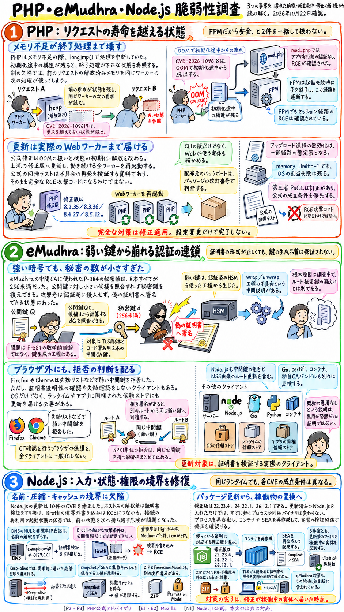
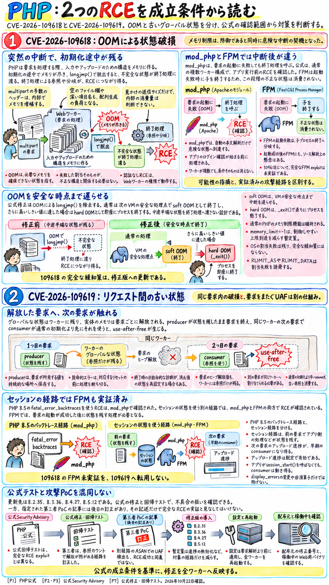
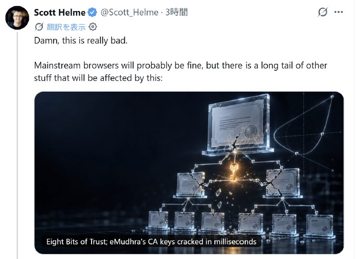
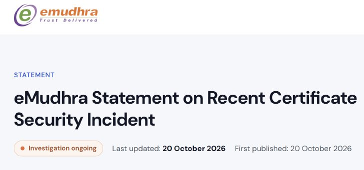
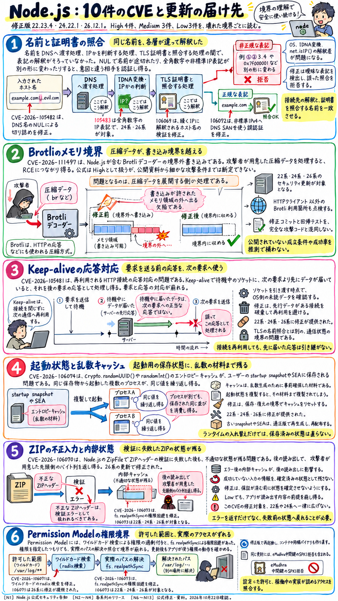

PHP
CVE-2026-109618 / 109619
9.2CVSS v4.0（事前告知時）× 2件
- 何が起きるか
- メモリ不足時の脱出やリクエスト間に残る状態から、認証なしでRCE。
- 修正版
- 8.2.35 / 8.3.36 / 8.4.27 / 8.5.12
- 最初にやること
- Web側の全ワーカーを修正版で再起動する。公開中のmod_phpが最優先。
メモリ管理、証明書の鍵、名前の解釈。3つの境界で崩れた前提と、更新を「実体」まで届ける方法
PHPはリクエスト処理のメモリ管理、eMudhraは中間CA証明書の鍵生成、Node.jsは名前の解釈・証明書検証・圧縮処理などで、深刻な欠陥が見つかった。3件とも、アプリケーションのコードを直すだけでは片づかない。稼働中のランタイム、信頼ストア、常駐プロセス、配布済みの成果物まで確かめる必要がある。
本稿は3つの事案を章ごとに分け、原因、成立条件、確認された影響、修正内容、運用上の対応の順に解説する。PHPとNode.jsは事前予告の段階を過ぎ、すでに修正版が出ている。[P1] [N1]
Aoi: みなさんこんにちは。10月21日のPHP・eMudhra・Node.js 脆弱性調査レポートです。
Ken: こんにちは。今日は、PHPの実行系におけるメモリ管理とリクエスト境界の欠陥、認証局eMudhraの中間CA証明書における秘密鍵生成の欠陥、そしてNode.jsの名前解決やTLS検証、圧縮処理などを含む複数のセキュリティ更新について、順番に詳しく解説していきます。これら3つの事案に共通しているのは、「通常の処理なら成り立つ前提が、例外処理や境界条件で崩れた」という点です。しかも、どれもアプリケーション自身のソースコードを更新するだけでは解決せず、稼働中のランタイムや信頼ストア、常駐プロセス、配布済みの成果物まで踏み込んで確認する必要があります。
Aoi: どれもシステムの土台に関わる重要な問題ですね。まずは1つ目のテーマ、PHPの脆弱性からお願いします。これはいつ公開されて、どのような環境に影響するものなのでしょうか。
Ken: PHPの公式発表と2件の公式セキュリティアドバイザリは10月21日に公開されました。すでに事前予告の段階を過ぎて、上流の修正版としてPHP 8.2.35、8.3.36、8.4.27、そして8.5.12が公開されています。今回の問題は、WordPressやNextcloud、あるいは自作のWebアプリケーションといった特定のCMSやプラグインの入力検証ミスではなく、PHPの実行系そのものの内部状態管理の欠陥です。したがって、上で動くソフトウェアが何であっても、PHPの処理が危険な経路に到達すれば影響を受けます。PHP公式は、PHP-FPM、Apacheのmod_php、php-cgi、FrankenPHP、LiteSpeedなど、Webリクエストを処理するあらゆるPHP環境に対して更新を求めています。
Aoi: アプリケーション側のバグではないとなると、ログイン画面などで守ることもできないのですか。
Ken: そうなんです。今回公開された脆弱性はCVE-2026-109618とCVE-2026-109619の2件で、事前告知ではどちらもCVSS v4.0で9.2のCriticalと評価されていました。10月21日に公開された公式アドバイザリでは、前者の109618が「RCE via OOM corruption」、つまりメモリ不足時の破損によるリモートコード実行、後者の109619が「RCE via stale global state」、つまり古いグローバル状態の残留によるリモートコード実行として詳しく説明されています。どちらも未認証のままWebワーカーの権限で任意のコードを実行できるため、ログイン画面の有無やアプリケーション層の認証機構だけでは防御できません。
Aoi: 公開前には「PHP 5以降すべてが対象」とか「CVSS 10だ」といった話も出ていたようですが、実際のところはどうなのでしょうか。
Ken: 10月20日公開・21日更新のwatchTowrの記事や10月21日のITmedia NEWSの事前報道など、詳細公開前にはそうした包括的な情報も広まりました。もちろん古いPHPの危険性を軽視してはいけませんが、詳細が公開された現在、運用判断の基準にすべきなのは、ブランチ別の公式修正版、SAPIごとの成立条件、そして各OSディストリビューションのバックポート情報です。「すべてのバージョンや構成で同じ攻撃が実証された」と解釈するのは適切ではありません。なお、PHP 8.1以前は通常の上流更新の対象外ですが、今回は7.4、8.0、8.1に対して最小限のソースバックポートが特別に提供されました。また、OSディストリビューションが同じバージョン番号のまま修正をバックポートして提供する場合は、LTSベンダー等へ事前にパッチが提供されているため、バージョン番号の見た目だけで判断せず、各ベンダーのアドバイザリとパッケージリビジョンを確認する必要があります。
Aoi: なるほど。では、その2つの脆弱性がどういう仕組みで起きるのか教えてください。両方ともPHPのメモリや状態の管理が関係しているんですよね。
Ken: はい。まず大前提として、「PHPのワーカーはリクエストごとに消えるとは限らない」という仕組みを押さえる必要があります。PHPは1つのWebリクエストごとにスクリプトを実行しますが、そのたびにOSのプロセスが新しく作られるとは限りません。Apacheの子プロセスやPHP-FPMのワーカーは、同じプロセスを使い回して複数のリクエストを順番に処理します。そのためプロセス内部には、プロセスが生きている限り残る「グローバルな管理領域」と、1回のリクエストが終わると解放される「リクエスト用のメモリ領域」が同居しています。
Aoi: もし、プロセス側に残る管理領域が、すでに終わったリクエストのメモリを指したままになっていたらどうなるのですか。
Ken: まさにそこが問題になります。すでに明け渡された部屋の住所だけが残っていて、次のリクエストがその部屋を読みに行ってしまうような状態です。このように解放済みのメモリ領域を参照してしまう欠陥をUse After Free、略してUAFと呼びます。解放されたメモリ領域が、後続のリクエスト処理で別の新しいデータに再利用されると、プログラムは「古い構造体」だと思って読み取った中身が、実際には攻撃者が送り込んだ新しいデータにすり替わっている、ということが起きます。結果としてポインターやデータの型、参照先を誤認してしまい、単なるプロセスのクラッシュにとどまらず、メモリ内容の漏えいやリモートコード実行、いわゆるRCEに発展します。今回の公式アドバイザリでも、ヒープ領域の配置を操作する手法と組み合わせたRCEの成立が確認されています。
Aoi: ワーカープロセスが複数のリクエストをまたいで生き続けるからこそ、前のリクエストの異常が次のリクエストに響くんですね。では、1つ目のCVE-2026-109618は具体的にどういった欠陥なのですか。
Ken: 109618は、OOM、つまりOut Of Memory（メモリ不足）が発生したときに、「初期化途中の状態」から脱出してしまう欠陥です。PHPは従来、メモリの確保に失敗した際、`longjmp()` という仕組みを使って現在の実行文脈から一気に脱出し、リクエストを中断していました。問題だったのは、内部データをまさに組み立てている最中であっても、この脱出が起き得ることです。まだ初期化が終わっていないメモリが、他の処理から参照できる場所に見えたまま脱出してしまうと、通常ならデータが完成してから動くはずの終了処理が、その書きかけの状態を読んだり条件分岐に使ったりしてしまいます。しかも、失敗したメモリ確保のタイミングが、その不正なデータ自体の確保である必要すらありません。
Aoi: 書類を作っている途中で突然「作業を中断しろ」と別室に呼び出されて、書きかけの書類が「完成品」の棚に置かれたままになり、後から来た片付け担当者がそれを完成品だと信じて処理してしまうようなものですね。
Ken: ええ、その通りです。では、どうやって攻撃者はそのメモリ不足を引き起こすのかというと、公式アドバイザリは `multipart/form-data`、つまりフォームやファイルアップロードなどで使われるデータ形式の処理における複数の経路を挙げています。たとえば、利用可能な `Content-Length` ヘッダーがない場合の初期サイズ検査、各パート内の大量のヘッダー、空のファイルコントロールや深く入れ子になったフィールド名が作るメタデータ配列などです。ここで重要なのは、通信上のバイト数とPHP内部で消費される管理メモリの大きさは一致しないということです。そのため、設定された `post_max_size` の範囲内に見える小さなHTTPリクエストであっても、内部でメモリが膨張して `memory_limit` に到達し得ますし、アプリケーション側の処理で大きなメモリ確保を誘発する経路も対象になります。
Aoi: ということは、「アップロードできるファイルのサイズ上限を小さくしているから大丈夫」とは言えないんですね。
Ken: そうなんです。ファイル本体のサイズだけでなく、パートの総数、各パートのヘッダー、入力変数の入れ子の深さ、さらに展開後のボディサイズまでがメモリ消費量に影響します。また、前段のリバースプロキシ側での受信サイズ制限とPHP内部の制限は独立しているため、両者を区別して評価しなければなりません。そしてもう1つ、この109618で非常に重要なのが、PHPとWebサーバーを結びつけるインターフェースであるSAPIの種類によって、異常終了後の挙動が異なる点です。
Aoi: Apacheのmod_phpと、PHP-FPMで違いがあるということですか。
Ken: はい。Apacheのmod_phpは、リクエストの開始処理に失敗しても終了処理を呼び出す仕組みになっています。そのため、アプリケーションのコードが1行も動く前の、自動的なリクエストボディ解析の段階でメモリ不足が起きても、未完成の不正な状態がそのまま終了処理へと届いてしまいます。PHP公式は、標準的な入力・メモリ制限と複数ワーカーのprefork構成のmod_php環境で、HTTP越しの完全なRCEを確認しています。
Aoi: アプリケーションが動く前に成立してしまうのは深刻ですね。一方のPHP-FPMはどうなのですか。
Ken: PHP-FPMの場合は、リクエストの開始処理に失敗すると、その子プロセス自体を終了させます。そのため、mod_phpと同じ「開始失敗後の終了処理」という経路は遮断されます。ただし、リクエストの開始に成功した後、アプリケーションが動いている最中にもメモリ不足で危険な文脈を中断し得るため、公式はソースコード解析上、FPMも影響候補としています。整理すると、この109618単独ではFPMでの完全なRCE実証は示されていませんが、次に説明するもう1つの脆弱性、109619のセッション経路ではFPMでのRCEが公式に検証されています。この区別を正確に押さえることが、「FPMだから絶対に安全だ」という過度な安心と、「どの構成でも全く同じように攻撃される」という過度な一般化の両方を防ぐ鍵になります。
Aoi: では、その2つ目の脆弱性、CVE-2026-109619について詳しく教えてください。こちらはどういった仕組みなのでしょうか。
Ken: 109619は、前のリクエストの状態がリセットされずに残り、次のリクエストの通常の初期化処理よりも早い段階で参照されてしまう欠陥です。エラー、セッション、オブジェクト、拡張機能などのグローバル状態が、リクエストの寿命を超えてプロセスに残ってしまうことで起きます。これが成立するには、状態を「残す処理」と、それを「使う処理」の両方が同じワーカープロセスでそろう必要があります。公式アドバイザリでは、状態を残す側をproducer、使う側をconsumerと呼んでいます。
Aoi: 順番に言うと、まず1つ目のリクエストで何が起きるのですか。
Ken: まず、あるリクエストの中でproducerが、そのリクエスト固有のメモリ領域にある状態をプロセス側のグローバル領域に記録します。ところが、致命的エラーやタイムアウト、メモリ不足などで異常終了したり、終了処理の後半で出た警告によって状態が再設定されたりして、本来行われるはずのリセット処理に到達しないままリクエストが終わります。すると、リクエスト用のヒープメモリ自体は解放されるのに、ワーカープロセス側にはそこを指す参照だけが残ります。次に、生き残った同じワーカープロセスに別のリクエストが届きます。このとき、通常のモジュール初期化でその参照が上書きされるよりも前に動く早期処理、すなわちconsumerが走ると、すでに解放された古い状態を読み取ってしまうのです。
Aoi: 通常の初期化より前に動く早期処理には、具体的にどんなものがあるのでしょうか。
Ken: 公式アドバイザリでは、RCEが確認された2つの具体的な経路が挙げられています。1つ目の確認済み経路Aは、PHP 8.5の新機能である `fatal_error_backtraces` を使う経路です。PHP 8.5でこの設定が有効になっている環境では、致命的エラーが発生した際のバックトレース状態がリクエスト用メモリに記録されます。しかし終了時にそのグローバル状態のリセットが漏れ、次のリクエストのごく初期段階、たとえばINI設定を適用する際の診断処理などが、古い値を参照してしまいます。公式はこの経路を使ってmod_php環境でのRCEを確認しています。デバッグやログ確認を助ける便利な機能が、状態の寿命管理を誤ったことで攻撃の入口になった例です。
Aoi: なるほど。では、もう1つの確認済み経路Bというのは何ですか。ここでPHP-FPMも影響を受けるのでしょうか。
Ken: はい、確認済み経路Bは、セッションのアップロード進捗機能、すなわち `session.upload_progress` を使う経路です。この機能は通常のモジュール初期化処理よりも早い段階でセッションやデコード状態にアクセスするのですが、PHPではデフォルトで有効になっており、アプリケーション側で `session_start()` を明示的に呼び出していなくても動作します。前のリクエストで公開された状態が致命的エラーなどでリセットされずに残っていると、次のリクエストのupload progress処理がその解放済みメモリを読み取ってしまいます。
Aoi: さきほど「FPMはリクエスト開始処理の失敗なら子プロセスごと終了する」というお話がありましたが、この経路BではどうやってFPMでRCEが成立するのですか。
Ken: そこが非常に重要なポイントです。mod_phpではmultipartの開始処理中にproducerの記録と異常終了が起きますが、公式が実証したFPMでの攻撃経路は手順が異なります。FPMでは、まず「正常に開始されたリクエスト」のアプリケーション処理の中で状態を残し、その後に致命的エラーを起こします。開始処理自体は成功しているので子プロセスは死なずに生き残ります。そして、その生き残った同じワーカープロセスに届く次のリクエストで、早期に動くupload progressをconsumerとして利用するのです。公式によれば、この経路は一般的なdynamic pool構成のFPMでも成立し、条件を満たすアプリケーション操作があれば引き起こせるとされています。ですから、「FPMは開始失敗でプロセスが死ぬから安全だ」という知識だけでは、リクエスト後半のアプリケーション処理を経由するこの攻撃パターンを見落としてしまいます。
Aoi: また、さきほど早期のINI診断処理というお話がありましたが、「エラーや警告を画面に出さない設定」にしておけば防げるということはないのですか。
Ken: いいえ、防げません。早期INI診断の経路では、警告を画面に表示するか、あるいはログに記録するかを判断するよりも前の段階でグローバル状態へアクセスしてしまいます。そのため、`display_errors=Off` にしたり、`error_reporting` のレベルを変更したり、アットマーク（`@`）演算子でエラーを抑制したりしても対策にはなりません。古いあるいは不正なINI値、廃止された設定、数量の不正値、拡張機能の設定、`open_basedir` に拒否されるパスなどがこの診断の引き金になり得ます。なお、mod_phpのディレクトリ設定と、FPM起動時のpool設定や通常初期化後に読まれる `.user.ini` とでは適用されるタイミングが異なるという点も押さえておく必要があります。
Aoi: このPHPの脆弱性については、SNSなどでも「再現に成功した」という第三者の検証記事が出ていたようですが、レポートではどう評価されていますか。
Ken: J4ck3LSyN氏による10月21日のXへの投稿と、そこからリンクされた技術記事ですね。当初の投稿では、`session.upload_progress` におけるUAFを使って今回の2件の脆弱性を再現・検証したと主張されていました。しかし、リンク先の本人の技術記事には、同じ10月21日付で重要な訂正が追記されています。その訂正によると、当初主張していた1つ目の「cached-pointer chain」という経路は、参照カウントが増加するため配列が解放されずに残り、実際にはUAFとして成立していませんでした。また、もう一方の「serialize-state」におけるリクエスト間UAFは、メモリエラー検出ツールのAddressSanitizer（ASAN）では検知したものの、コード実行には至っていないと説明されています。
Aoi: 最初はRCEができたように書かれていたけれど、実際にはコード実行まで行っていなかったと本人が訂正したのですね。
Ken: そうです。記事内には当初の記述や動作映像への言及と訂正が混在していますが、ASANによるUAFの検出、セグメンテーション違反（SIGSEGV）の発生、メモリへの入力値の反映、そして最終的な任意コード実行（RCE）は、それぞれ全く段階の異なる証拠です。第三者の特定経路が不成立だったからといって公式が別経路で確認したRCEの危険性が消えるわけではありませんが、影響範囲の判断にはPHP公式アドバイザリと、公式の修正コミットに含まれる `oom_request_parsing.phpt` や `oom_pending_at_shutdown.phpt` といった回帰テストを優先すべきです。また、その第三者記事で紹介されている `.user.ini` などを使った暫定策は、公式の手順と食い違っています。PHP公式は、upload progressの無効化はリクエスト解析より前の段階で適用する必要があり、スクリプト内の `ini_set()` やFPMの `.user.ini` には頼らないよう明記しています。
Aoi: では、公式の修正版ではプログラムの内部がどのように直されたのでしょうか。また、すぐにアップデートできない場合の正しい暫定策も教えてください。
Ken: 公式の修正内容ですが、まず109618のOOM問題については、メモリ確保失敗時に `longjmp()` でいきなり脱出する仕組みを取り除きました。代わりに、まず次の仮想マシン（VM）の安全な地点まで待ってから処理する「soft OOM」を使い、それでもさらに高いしきい値に達した場合には `_exit()` によってプロセスごと即座に終了する「hard OOM」を使う二段構えに改められました。これにより、メモリ消費制限を維持したまま、組み立て途中の未完成な状態を通常のリクエスト終了処理が見ないようにしています。次に109619の修正では、次のリクエストの早期処理が届く前に、より幅広い種類のグローバル状態を確実にリセットするよう刷新されました。特定のproducerだけを止めても別の拡張機能やコールバックが状態を残す可能性があるため、公式は「全体の状態リセットパッチを含む更新だけが信頼できる対策だ」と強調しています。
Aoi: どうしても直ちに更新できない場合の緩和策はどうなりますか。
Ken: あくまでパッチ適用までの間に攻撃の露出を減らす限定的な緩和策ですが、公式が挙げている対策と条件を整理します。1つ目は `session.upload_progress.enabled=0` で、確認済みの早期セッション経路を抑えますが、リクエスト解析より前に有効になる管理者設定で行い、全ワーカーの再起動が必要です。2つ目はPHP 8.5における `fatal_error_backtraces=0` の設定と全ワーカー再起動。3つ目は管理者が `memory_limit=-1` を強制してPHP自身の予測可能なメモリ上限によるOOMをなくす方法ですが、これはOSやコンテナ層でのメモリ制限・可用性対策と必ずセットで検討し、下位設定で有限値に戻らないことを確認する必要があります。ただしここで絶対にやってはいけないのが、OSの `RLIMIT_AS` や `RLIMIT_DATA` によるメモリ制限を代替手段として使うことです。これはシステムコールレベルでのメモリ確保失敗を直接引き起こし、まさに問題となっている脆弱な脱出経路へ飛び込む原因になるため、PHP公式が強く警告しています。
Aoi: OS側のRLIMITで絞ると、かえって脆弱性を踏んでしまうのですね。他の緩和策はどうでしょうか。
Ken: 4つ目は、デコード後のボディやパート数、ヘッダー、入れ子の深さの制限です。`Content-Length` がない場合もカバーする必要があり、PHP公式はファイルアップロードが不要な環境では `post_max_size=8M`、必要な環境でも `32M` 程度を目安とし、`upload_max_filesize` をそれより小さい値に保つよう案内しています。5つ目は早期INI診断や到達可能な致命的エラーの除去、そして6つ目はワーカープロセスの頻繁な交換です。公式は性能低下を許容できればFPMの `pm.max_requests=1`、つまり1リクエストごとにワーカーを作り直す設定も例示していますが、これも単独で完全な修正にはなりません。結局のところ、パッケージを更新したうえで、端末の `php -v` だけでなく実際にWebワーカーとして動いているモジュールやバイナリを特定し、すべてのワーカープロセスを新しいバイナリで再起動して、アップロードやセッションなどの主要機能が動くか確認することが不可欠です。なお、過去にクラッシュやOOMのログがないからといって悪用がなかったとは断定できないため、ログ監査は補助的な手段と位置づけられています。
Aoi: ありがとうございます。ここまでがPHPの2件の脆弱性ですね。では2つ目のテーマ、認証局eMudhraの事案に移りましょう。見出しに「秘密鍵が『4』なら信頼は崩壊する」とありますが、これは一体どういうことなのでしょうか。
Ken: これはWebのHTTPS通信の根幹にある公開鍵基盤、WebPKIの信頼を揺るがした事案です。10月18日以降に公開されたMozillaのBugzilla記録や、10月20日以降のMozilla Security、Chrome Root Program、eMudhra自身の声明、Cloudflareのブログ、そして研究者Scott Helme氏の10月の技術記事などで詳細が明らかになりました。まず強調しておきたいのは、TLSで使われている暗号アルゴリズム自体が数学的に破られたわけではないということです。認証局であるeMudhraが発行・公開した8つの中間CA証明書において、対になる秘密鍵の元の数値が極端に小さかったため、誰もがインターネット上で取得できる公開鍵から、秘密鍵をごく簡単に逆算できてしまったのです。
Aoi: なぜ中間CAの秘密鍵が逆算されると、それほど危険なのですか。
Ken: HTTPS通信で「接続先のサーバーが本当にそのドメインの正当な持ち主か」を確認する仕組みに関わります。Webサイトのサーバー証明書には、認証局（CA）のデジタル署名がついています。ブラウザなどのクライアントは、あらかじめ自分の信頼ストア（トラストストア）に登録された一番上の「ルートCA」から、実務を担う「中間CA」、そして「サーバー証明書」へと署名の連鎖をたどって本物かどうかを検証します。つまり、中間CAの秘密鍵を第三者が手に入れると、攻撃者は正規の認証局になりすまして、世界中のどんなドメインの偽証明書でも勝手に署名して作れてしまうのです。もし通信経路の途中に割り込める攻撃者がその偽証明書を提示し、クライアント側がその中間CAを信頼したまま受け入れれば、通信自体は暗号化されていても、そもそも話している相手が偽物という中間者攻撃が成立してしまいます。
Aoi: 認証局のサーバーにハッキングして鍵を盗んだのではなく、公開されている証明書から計算できてしまったんですね。どのような暗号が使われていて、なぜ1秒もかからずに復元できたのでしょうか。
Ken: 問題となった中間CAの鍵には、「P-384」という十分な強度を持つ楕円曲線暗号が使われていました。楕円曲線暗号では、秘密鍵を整数 ディー、曲線上で定められた基点を ジー、公開鍵を キュー とすると、公開鍵 キュー は基点 ジー に秘密鍵 ディー を掛け合わせる「楕円曲線上のスカラー倍算」、式で書けば 「キューは、ディーによるジーのスカラー倍」 で求められます。本来であれば、十分に広い範囲から無作為に選ばれた巨大な整数 ディー から公開鍵 キュー を計算するのは簡単でも、公開された キュー から元の ディー を逆算することは現実的に不可能です。ところがMozillaの発表によれば、今回問題となった8つの鍵は、秘密鍵 ディー がすべて「256未満の正の整数」だったのです。
Aoi: 256未満ですか！ それなら1から順番に計算して公開鍵と比べるだけで、すぐに当たってしまいますよね。
Ken: その通りです。研究者のScott Helme氏は、公開されている証明書から8つすべての秘密鍵を手元のノートPCで復元し、かかった時間は1秒未満だったと報告しています。Helme氏が公表した実際の復元値を見ると、TLSのDV（ドメイン認証）用である `EM DV TLS CA - G3B` が156、`G3C` が230。TLSのEV用である `EM EV TLS CA - G3B` が115、`G3C` が56。TLSのOV用である `EM OV TLS CA - G3B` が155、そして `EM OV TLS CA - G3C` はなんと「4」でした。さらにコード署名用の `EM OV CS CA - G3B` が66、`G3C` が237です。
Aoi: 秘密鍵が本当に「4」だったんですね……。でも、そんなに小さな数字で作られた公開鍵は、証明書として見たときに異常だとわからないものなのですか。
Ken: そこが落とし穴で、秘密鍵が4や56であっても、計算された公開鍵 キュー はどれも形式上、楕円曲線上の正しい点になります。ですから、証明書の構文や鍵長の表示、使われている曲線名（P-384）を外から点検しただけでは、この弱さは見抜けません。「P-384という強い規格を選んだこと」と「個々の秘密値が強いこと」は全く別の問題なのです。なお、「8」という数字は問題となった鍵ペア、つまり中間CAの数であり、後で説明する他社ルートからの相互署名（クロスサイン）版の証明書まで含めると、対象となる証明書ファイルの総数はさらに多くなります。発行元の署名が違っても、中身に入っている公開鍵が同じである以上、秘密鍵が簡単に逆算できる弱点は共通しています。
Aoi: これほど簡単に秘密鍵が復元できる状態だったとなると、すでに誰かが悪用して偽の証明書を作ったりしていたのでしょうか。
Ken: 確認された事実と不明な点を分けて説明しますね。まず、Mozillaが最初に受け取った脆弱性報告には、問題の8つの秘密鍵で実際に署名されたメッセージが添付されていました。さらにMozilla自身も、報告者の具体的な手法を知らない状態から独自に検証を行い、秘密鍵の復元に成功しています。つまり、第三者が実際に署名を行える状態にあったことは動かぬ事実として確認されています。一方で、10月21日時点の公式および当事者の説明では、実際の悪用は確認されていません。eMudhraは対象の中間CAからエンドエンティティ証明書、つまり末端のサーバー証明書は発行されていないと説明し、Chromeはブロック措置をとる前に対象の6つのTLS中間CAへつながる証明書がCT（Certificate Transparency）ログに存在しなかったと説明しています。ただし、「正規の発行記録がないこと」「CTログに登録された偽造証明書がないこと」、そして「CTログを見ないクライアントに対する過去の攻撃がないこと」はそれぞれ別の命題であり、最後の点については不明として残ります。
Aoi: そもそも、認証局が鍵を作るときには厳重な管理がされているはずですよね。なぜ256未満の数字が選ばれるようなミスが起きたのでしょうか。
Ken: eMudhraの中間調査報告によると、問題が起きたのは2025年4月の鍵生成セレモニーに関わる一部の中間CAに限定されており、上位のルートCAや他の中間CAの鍵には影響がないとされています。このとき、同社はFIPS 140-2 Level 3の認証を取得したHSM、つまり鍵を厳重に保護する専用のハードウェアセキュリティモジュールを使用していました。ですから「HSMを使っていなかったことによる事故」ではありません。中間報告によれば、通常とは異なるwrap / unwrap、すなわち鍵の暗号化エクスポートとインポートのテストを含む工程において、スクリプトの不具合によりエントロピー（乱雑さ）の低い第2の鍵が誤って生成されました。さらに、ラベル名が似ていたために、証明書署名要求（CSR）を作成する際、その弱い鍵が誤って選択され、そのまま自社ルートによる署名と、他社であるSectigoへの相互署名依頼に使われてしまったと説明されています。
Aoi: どんなに高性能なHSMを使っていても、人間の運用やスクリプトで弱い鍵を選んで証明書にしてしまったら防げないということですね。
Ken: ええ。なお、最終的な根本原因は現在も調査中とされているため、これは現時点での途中経過として捉える必要があります。また、eMudhraは声明の中で「影響を受ける顧客は限定的」と述べていますが、これは正規に発行された証明書の移行作業が必要な顧客の範囲を指しているだけであって、弱い中間CA鍵を信頼してしまう世界中のクライアントソフトウェアの攻撃対象範囲が狭いという意味ではありません。
Aoi: では、その発覚からどのように防御措置がとられたのか、時系列とブラウザの仕組みを教えてください。
Ken: 協定世界時（UTC）で時系列をたどると、問題の鍵が生成されたのが2025年4月。そこから1年半ほど経った2026年10月17日の18時05分（UTC）、研究者のWayne氏がChrome等へ署名付きの証明を送付しました。Chromeの記録ではわずか1時間40分後の19時45分に検証とブロック更新を完了しています。続いて同日20時06分にMozillaが報告を受信し、22時59分には集中配信型の失効リストである「OneCRL」の配布を完了しました。つまり、通常設定のFirefoxユーザーへの保護は3時間未満で完了したことになります。翌10月18日09時38分にはeMudhraが対象の8証明書を鍵危殆化（caCompromise）として失効させ、10月19日にはAppleの保護や下流の信頼ストアへの連絡が進み、Go言語の修正版（1.27.3および1.26.10）が配布されました。そして10月20日にMozillaが事案を公表してFirefox 158.0.1等とNSS 3.131.1を配布、Cloudflareも対策を公表し、10月21日にはFirefox Android 158.0.2やNode.jsの修正版が配布されています。
Aoi: ChromeやFirefoxが報告から数時間でユーザーを守れたのはなぜですか。
Ken: 主要ブラウザには、バージョンアップや再起動を待たずに失効情報を緊急配信する仕組みと、CT（Certificate Transparency）の仕組みがあるからです。Mozillaは「OneCRL」を更新し、GoogleはChrome向けに6つのTLS用中間CAのSPKI、つまり公開鍵情報のハッシュ値を「CRLSet」に登録して配信しました。ここで証明書ファイルそのものではなく「公開鍵（SPKI）単位」でブロックしたことが非常に重要です。これにより、同じ弱い鍵ペアを持つeMudhra自社発行版の中間証明書と、Sectigoによる相互署名版の中間証明書の両方を一括して拒否できます。なお、8つのうち残り2つはコード署名用の中間CAであり、拡張鍵用途（EKU）の制約で元々TLS通信には使えないため、ChromeのTLS保護措置からは除外されています。さらにChromeは、公開されたログに記録されるCTの要件を満たさない証明書を既定で拒否するため、ブロック前であっても偽造証明書が既定で信頼されることはなかったとChrome Root Programは説明しています。
Aoi: ブラウザはすごく素早く守られたんですね。でも、中間CAだけをブロックすれば済む話なのに、その後MozillaやChromeが上位の「ルート証明書」まで削除する方針を出したのはなぜですか。
Ken: そこがまさに、ブラウザの「外」にいるクライアントを守るための措置なのです。今回は中間CAの鍵が弱かったのであって、上位のルートCAの秘密鍵が破られたわけではありません。しかし、世の中の多くのTLSクライアントやライブラリは、ブラウザのようなOneCRLやCRLSetといった緊急配信の仕組みを持っておらず、オンラインでの失効確認（CRLやOCSP）やCTの検査もデフォルトでは行いません。手元のディスクにあるルート証明書一覧から署名の鎖がつながるかどうかだけを見る環境まで保護するには、より上流にあるルート証明書そのものの信頼を取り消す対策が必要になる場合があります。そのためにMozillaはNSS 3.131.1で上位ルートを削除し、ChromeもChrome Root Store v43で対象ルートを外す方針を示しました。なお、この広いルート不信任に伴って、同じECCルートG3配下にある正規の別中間CAやサイトも影響を受けるため、eMudhraはG3配下の発行を停止し、約3万件の証明書を別のRSAルートG1配下へ移行する見込みだとBugzilla上で説明しています。
Aoi: なるほど！ さらに、さきほど少し出た「相互署名（クロスサイン）」があると、eMudhraのルート証明書を消しただけでは不十分になるのですか。
Ken: そうなんです。たとえeMudhra自身のルート証明書を信頼ストアから削除しても、他社であるSectigoのルートから問題の弱い中間CAへつながる相互署名の経路が残っていれば、クライアントはSectigo側のルートをたどって偽造証明書を受け入れてしまう恐れがあります。今回Sectigo側の起点となっていた「AAA Certificate Services」というルートは、ChromeとMozillaのストアからはすでに削除済みでしたが、MicrosoftやAppleなどのストアでは扱いが異なっていました。実際、Scott Helme氏が手元の検証環境で名前解決を向けて行った実験では、実在する著名サービスのドメイン名を持つ偽造証明書を作ったところ、curl、Python、Node.jsがそれぞれのデフォルト設定でこれを正規の証明書として受け入れてしまいました。
Aoi: ブラウザでアクセスしてエラーになるからといって、同じパソコンやサーバーで動いているPythonやcurl、Node.jsが安全だと思い込んではいけないのですね。具体的にはどのパッケージをどのバージョンに更新すればよいのでしょうか。
Ken: 10月20日以降にMozillaの担当者が運営する検証サイトにまとめられた主な修正版を挙げます。まずNSSが `3.131.1`。Go言語が `1.27.3` および `1.26.10` で、これはGo自体だけでなく配布済みバイナリの再ビルドが必要です。Node.jsが `22.23.4`、`24.22.1`、`26.12.1`。PythonのCAバンドルであるcertifiが `2026.10.19`、パッケージ管理のpipが `26.2.2`、uvが `0.13.4` で、これらはPython本体だけでなく仮想環境ごとの更新が必要です。curlのCA bundleが `2026-10-20`、Homebrewの `ca-certificates` が `2026-09-25_1`。またCloudflare製品では、`cloudflared` が `2026.10.2`、Cloudflare One / WARPのデスクトップ版が `2026.8.2115.0`、モバイル向けのCloudflare OneがAndroid版 `2.5.7`・iOS版 `1.12.7`、1.1.1.1アプリがAndroid版 `6.38.11`・iOS版 `6.31.8` です。
Aoi: 更新したあと、自分の環境がちゃんと偽の経路を拒否できるか確かめるにはどうすればいいですか。
Ken: Mozillaの担当者が公開している検証用サイト（`we-have-a-problem.com`）には、eMudhra自身のルートへ連なる経路と、Sectigoの相互署名ルートへ連なる経路のそれぞれについて、テスト用のホストが用意されています。そこへ `curl --verbose` などで接続し、正常にページが表示されるのではなく、「証明書検証エラーによって接続が拒否されること」を確認します。このとき、DNSの名前解決失敗やタイムアウト、社内プロキシの遮断などを証明書エラーと取り違えないよう、エラーメッセージの中身まで確認してください。また、本番のアプリケーションが独自のCAバンドルやSDK内部のTLS実装を使っている場合は、その実際の通信経路でテストする必要があります。もし更新後に正規の取引先サイトなどで証明書エラーが出た場合は、絶対に検証を無効化するオプション（`-k` や `--insecure` など）で回避せず、サーバー側で信頼される別の証明書チェーンへ再発行・交換してもらうのが正しい対処です。
Aoi: よくわかりました。では3つ目のテーマ、Node.jsのセキュリティ更新に進みましょう。こちらは10月21日に公開されたとのことですが、全体でどのような内容になっているのですか。
Ken: 10月21日に公開されたNode.jsのセキュリティ更新は、サポート対象の3つのリリースラインを対象としており、修正版はLTSの `22.23.4` と `24.22.1`、そしてCurrentの `26.12.1` です。すでにサポートが終了（EOL）している古い系列については修正が提供されないため、公式は常に影響を受けるものとして扱い、サポート対象系列へ移行するよう案内しています。今回の更新には最高深刻度Highを含む計10件のCVE修正と、さきほどのeMudhra事案への対策、さらに内蔵ライブラリの更新が含まれています。Webサーバーとしてリクエストを受け取る処理だけでなく、外向きのTLS通信やDNSの名前解決、圧縮データの展開、さらには単一実行ファイルとして配布されるアプリケーションまで影響が及びます。
Aoi: 10件もCVEがあるのですね。深刻度が高いものから順番に仕組みを教えていただけますか。
Ken: はい、まず深刻度Highのものが4件あります。1つ目はCVE-2026-105482で、22、24、26の全系列が対象です。これは `dns.resolve` 系のAPIが、NUL文字（ゼロの文字）を含む名前を途中で切り詰めてしまう問題です。JavaScriptの文字列は途中にNUL文字を含めることができますが、その下で動くC言語層のインターフェースには、NUL文字を「文字列の終わり」として扱うものがあります。もしアプリケーション側が文字列の末尾にあるドメイン名を見て「許可された安全な接続先だ」と判定したのに、下位のDNS処理では途中のNUL文字より手前の部分だけを切り出して名前解決してしまうと、検査した名前と実際に通信する相手が別物になってしまいます。公式パッチでは、コールバック版、Promise版、関連ユーティリティのすべてで、入力文字列にNUL文字が含まれていないかを境界で厳密に検査し拒否するよう修正されました。
Aoi: 上位のJavaScriptと下位のC言語で「どこまでが文字列か」の解釈がずれていたわけですね。では、残りのHighの脆弱性は何ですか。
Ken: Highの2つ目と3つ目はTLSのホスト名検証に関わるもので、ここには深刻度Mediumの1件も密接に関わっているので、TLS関連の3件としてまとめて説明しますね。対象は、HighのCVE-2026-105483（24・26系列対象）、HighのCVE-2026-106069（全3系列対象）、そしてMediumのCVE-2026-106072（全3系列対象）です。なお、リリースノートの見出しでは106069と106072が1行にまとめられてHighと表示されていますが、セキュリティアドバイザリ上の個別の深刻度はHighとMediumで分かれています。
Aoi: TLSのホスト名検証というと、証明書の名前と接続先の名前が合っているか見る処理ですよね。ここでどんなずれが起きたのでしょうか。
Ken: TLSの証明書に記載されるサブジェクト代替名、すなわちSAN（Subject Alternative Name）には、「DNS名（dNSName）」と「IPアドレス（iPAddress）」という明確に区別された2つの異なるデータ型があります。問題が起きるのは、見た目上はドメイン名のように見えるけれど、正規化（文字の変換）や緩い解釈を通すとIPアドレスになるような文字列が入力された場合です。まず105483は、全角の数字や表意文字の句点などを含むホスト名が、正規化によってASCII文字のIPアドレス表記に変換されるケースです。元の入力文字列だけを見て「これはIPアドレスではない（つまりドメイン名だ）」と判断し、正規化後の名前を別の規則で照合してしまうと、実際のネットワーク上の接続先と証明書の照合対象がずれて検証を回避されてしまいます。
Aoi: 全角の数字でIPアドレスを書くと、最初はドメイン名扱いされるのに、通信するときにはIPアドレスになっちゃうんですね。もう一方の106069と106072はどういう問題ですか。
Ken: こちらは非正規のIPv4表記、つまり標準的ではない書き方のIPアドレスをめぐる問題です。OSの名前解決、国際化ドメイン名（IDNA）のASCII化処理、そしてNode.js自身のIPアドレス判定が、同じ文字列を同じ意味で扱うとは限りません。その結果、非正規のIPv4アドレスを、誤って証明書の「DNS名（dNSName）」のSANで認証してしまうといった不整合が起きます。公式の修正パッチでは、元の名前をIPアドレスと判定しなかったにもかかわらず、ASCII化した後の文字列がIPアドレスになるような場合、「Host is a non-canonical IP address（ホストが非正規のIPアドレスである）」として接続自体を拒否するよう改められました。曖昧な入力を都合よく解釈して証明書に合わせるのではなく、曖昧さそのものをエラーにする設計です。
Aoi: なるほど。では4つ目のHighであるCVE-2026-111497について教えてください。
Ken: 111497は22、24、26の全系列が対象で、圧縮形式であるBrotliのデコーダーにおける範囲外書き込み（Out-of-bounds write）がリモートコード実行（RCE）につながる脆弱性です。Node.jsでは `zlib` APIなどを通じてHTTP応答などのBrotli圧縮データを展開します。たとえ開発者がメモリ安全なJavaScriptだけでアプリケーションを書いていても、その裏で動くネイティブコードのBrotliデコーダーが未修正であれば、メモリ破壊によるRCEのリスクをそのまま引き継いでしまいます。公式のパッチではブロック種別の切り替えなどの処理で異常な状態をエラーとして返し停止させる修正が入っていますが、アドバイザリでは詳細な攻撃成立条件までは公表されていません。運用上は、クライアントから直接アップロードされる圧縮データだけでなく、Node.jsから外部のAPIやWebサーバーへ通信した際に返ってくる「HTTPレスポンスの自動解凍」なども入力経路になる点に注意して洗い出す必要があります。
Aoi: 外向きの通信で受け取るレスポンスもBrotli展開の入り口になるというのは見落としがちですね。では、深刻度Mediumの残りの脆弱性について教えてください。
Ken: MediumはさきほどのTLSの1件以外に2件あり、どちらも22、24、26の全系列が対象です。まずCVE-2026-105481は、HTTPのkeep-alive、つまり一度つないだ通信ソケットを閉じずに次のリクエストで再利用する仕組みにおける問題です。休止中のソケットに対し、こちらから次のリクエストを送るよりも前に相手側からデータが書き込まれていた場合、ソケットを再利用した後にその「古い残留データ」を今回のリクエストに対する応答として処理してしまうことがありました。従来の防御仕組み（data guard）は、イベントループがI/Oをポーリングしたときにしか働かなかったため、最後のポーリング以降にOSのバッファへ届いたデータを見落とす隙間があったのです。
Aoi: 修正版ではどうやってその隙間を塞いだのですか。
Ken: Node.jsのHTTPクライアントであるAgentが、休止中のソケットを新しいリクエストへ引き渡す「直前」に、OSに対して読み取り待ちデータの有無を直接問い合わせるようにしました。もし保留中のデータが1バイトでもあれば、そのソケットは破棄して別の新しい接続を使います。なお、これはあくまでNode.jsのHTTPクライアント（Agent）が再利用ソケットでレスポンスを読む際の境界処理の問題であり、一般的なリバースプロキシ製品などにおけるHTTP Request Smugglingと無条件に同一視するのではなく、自社アプリがどのHTTPクライアント実装でどうkeep-aliveを使っているかに即して評価すべきものです。
Aoi: もう1つのMedium、CVE-2026-106074は「乱数キャッシュ」の問題とありますね。
Ken: はい。これはNode.jsの起動時の状態を保存して再利用する「startup snapshot」や、アプリケーションを単一の実行ファイルにまとめる「SEA（Single Executable Application）」を使っている場合に起きる問題です。Node.jsで乱数やUUIDを生成する `crypto.randomUUID()` や `randomInt()` は、高速化のために内部でエントロピー（乱数の材料）のキャッシュを持っています。ところが、ユーザー側でスナップショットやSEAを作成した際、この「すでに生成された乱数のキャッシュ」まで一緒に保存されてしまい、そのスナップショットや単一実行ファイルから起動したすべてのプロセスが、全く同じUUIDや乱数の値を繰り返してしまうという欠陥がありました。
Aoi: 毎回シャッフルして違う番号を引かせるための抽選箱を配るつもりが、すでに順番通りに並んだ当選券の束までコピーして全店舗に配ってしまったような状態ですね。
Ken: まさにそうです。公式パッチでは、ユーザーのシリアライズ（保存）処理の後にキャッシュを消去し、さらにデシリアライズ（復元）処理の前にもリセットするよう修正されました。ここで運用上もっとも重要なのは、SEAやスナップショットを配布している場合、手元のNode.js本体を更新しただけでは、すでにビルドして配ってしまった実行ファイルの中身は直らないということです。必ず修正版のNode.jsでスナップショットやSEAを作り直し、再配布する必要があります。
Aoi: ビルド済みの配布物を作り直す必要があるんですね。では、残る深刻度Lowの3件（CVE-2026-106070、106071、106073）についても教えてください。
Ken: まずCVE-2026-106070は、26.x系列のみが対象のZIP処理の問題です。ZIPファイル内のローカルヘッダーを中央ディレクトリと照合して検証するよりも前にキャッシュしてしまうため、もし照合に失敗すると、キャッシュされたヘッダーだけが残り、データ本体の開始位置が未確定になります。その状態で後から読み出しを行うと、ファイルディスクリプターの現在位置をそのまま使ってしまい、攻撃者が制御可能な先頭側のバイト列を返してしまうという欠陥です。これもPHPの件と同様、「検証や初期化が終わる前の途中状態を、失敗後も有効なものとして扱ってしまう」構造的な問題ですが、深刻度はLowであり、公式が説明しているのはこの状態管理の欠陥であり、RCEやパストラバーサル（Zip Slip）だと一般化しないよう区別する必要があります。修正後は、検証と開始位置の計算に成功してから両方を確定して保存するようになりました。
Aoi: 残りの106071と106073は、どちらもPermission Model（権限モデル）に関するものですね。
Ken: はい。Permission ModelはNodeプロセスからのファイルアクセス等を制限する機能です。26.x系列対象の106071は、ワイルドカードを含むファイルパスの許可設定を内部のツリー（radix tree）で検索する際、文字列のプレフィックス比較の不具合によって、本来指定した範囲よりも広くファイル権限を付与してしまう問題です（なお、この修正は26.12.1のNotable Changesの見出しには独立項目がありませんが、Commits一覧に含まれています）。そして全3系列対象の106073は、`fs.realpathSync` において権限チェックが漏れており、Permission Modelを回避できてしまう問題です。もちろん、Permission Model機能を有効にしていないアプリケーションではこれら2件が直接の論点にはなりませんが、同じリリースにDNSやTLS、Brotliなどの重大な修正が含まれているため、更新自体はすべての環境に必要です。
Aoi: そして、今回のNode.jsのアップデートには、2つ目のテーマで扱ったeMudhraの証明書問題への対策も入っているんですよね。
Ken: そうなんです。しかも「二段構え」の対策が入っています。Node.jsにはブラウザのようなCRLSetやOneCRLもなく、デフォルトでのオンライン失効確認もありません。そこで今回の更新では、まず1段目として、内蔵されているルート証明書一覧をNSS 3.131.1由来のものに更新しました。さらに2段目として、危殆化したeMudhraの中間CAの公開鍵（SPKI）ハッシュをコード内に持ち、検証済みの証明書チェーンのなかにその公開鍵が含まれていたら拒否する処理を新たに導入したのです。これにより、相互署名版を含め、どのルート証明書からたどってきたとしても、あの弱い公開鍵を含む鎖を確実に止められます。
Aoi: Node.jsをアップデートすることで、Node自体の10件のCVEだけでなく、eMudhraの偽証明書問題も防げるようになるのですね。ちなみに、普段パッケージ管理で使っている `npm audit` を実行すれば、こうした問題も検知・解決できるのでしょうか。
Ken: いいえ、`npm audit` だけでは完結しません。今回のNode.jsの更新では、Node本体のコードだけでなく、内部に組み込まれているネイティブ依存ライブラリとして、c-ares、ca-cert、Undiciが全3系列で、OpenSSLが22と24系列で、SQLiteが22系列で更新され、さらにBrotliのセキュリティパッチも取り込まれています。これらはアプリケーションの `package-lock.json` に現れるnpmパッケージの依存関係とは別の層にあります。ですから、`npm audit` で脆弱性がゼロと表示されても、実行中のNode.jsバイナリ自体が古ければ未修正のままです。端末で `node --version` を打つだけでなく、常駐しているサービスやコンテナ、CIランナー、Electronなどの組み込み環境で、実際にどのパスのNodeバイナリ（`process.execPath`）と内蔵ライブラリ（`process.versions`）が動いているかを確認し、プロセスを再起動・再配備する必要があります。
Aoi: ここまで、PHP、eMudhra、Node.jsの3つの事案をそれぞれ詳しく見てきました。最後に、これら3つを横断して、私たちが実務でどう優先順位をつけ、何を確認すれば「対応完了」と言えるのか、全体のまとめをお願いします。
Ken: 3つの事案を振り返ると、共通して浮き彫りになったのは「ソフトウェアの配布単位」と「信頼や状態の管理単位」のギャップです。PHPではリクエストの寿命を超えてワーカープロセスに残る内部状態、eMudhraでは見た目の暗号規格ではなく鍵生成工程の健全性と各クライアントが参照する信頼ストア、Node.jsでは単一のランタイムが抱える文字コード・正規化・圧縮・乱数スナップショット・内蔵CAといった多様な境界が問題になりました。どれも「パッケージ管理ツールで更新コマンドを打った」「アプリの数行のコードを直した」というだけでは完了しません。
Aoi: 実際にたくさんのサーバーやシステムを抱えている場合、何から手をつけるべきでしょうか。
Ken: 優先順位は、CVSSのスコアの数字だけを並べるのではなく、「外部からの攻撃の到達可能性（侵入面）」と「更新の反映状態」を軸に組み立てます。最優先で即時対応すべきなのは、インターネットに公開されている未修正のPHP環境、とりわけアプリケーションのコードが動く前の段階でHTTP越しのRCEが確認されているApache `mod_php` 構成です。また、アプリケーション処理と早期セッション処理の組み合わせでRCEが実証されている `PHP-FPM` 構成も速やかに更新します。並行してNode.jsについては、外部からの信頼できない入力がBrotli展開、DNS解決、TLS接続などの該当APIへ到達するかを評価しつつ3系列のアップデートを進め、eMudhra事案については外部と通信するバックエンドサービスやCI/CDパイプラインが古い信頼ストアを参照したまま取り残されないよう点検します。
Aoi: そして、作業が終わったあとの「完了確認」のポイントはどこになりますか。
Ken: 最終的に安全性を確認すべき「実体」は3つそれぞれで明確に決まっています。PHPであれば「修正版バイナリで再起動された実際のWebワーカープロセス」であり、CLIのバージョン表示ではありません。eMudhraであれば「ブラウザではなく、本番のAPIクライアントやSDKが実際に使うTLS検証経路とCA設定」であり、検証用ホストに対して証明書エラーで正しく拒否できること、かつ正規サイトのエラーを検証無効化で回避しないことです。そしてNode.jsであれば「稼働中の常駐ランタイムプロセスと、再ビルド・再配布されたコンテナやSEA、スナップショット」です。どの実体がどの前提を使っているかを資産台帳で一致させ、プロセスの入れ替え後に実際の通信や業務機能で動作を確かめ、その証跡を残すこと。そこまでやり切って初めて、今回のセキュリティ対応は完結します。
Aoi: 仕組みの深いところから実務での確認手順まで、よく整理できました。本日はここまでとなります。ありがとうございました。
Ken: ありがとうございました。

要点
CVE-2026-109618 / 109619
9.2CVSS v4.0（事前告知時）× 2件
中間CA証明書の鍵危殆化
d < 2568つの中間CA鍵の秘密値
2026年10月のセキュリティリリース
10件うちHigh 4件
共通の完了条件：パッケージを入れただけでは終わらない。実際に動くプロセス、コンテナ、配布物、TLSの検証経路まで修正が届いたことを確かめて、初めて対応完了になる（確認基準）。
概要
3件に共通するのは、「通常の処理なら成り立つ前提が、例外処理や境界で崩れた」という点だ。ただし、攻撃が届く場所も、更新すべき部品も違う。PHPは主にサーバーが受け取るリクエスト、eMudhraはクライアントが接続相手を信頼する判断に関わる。Node.jsはサーバー側とクライアント側の両方に加え、配布物まで点検の対象になる。
欠陥がどこにあるかを見ると、3件で更新すべき場所が違うことが分かる。
次の比較表は対応計画の入口である。同じ危険度、同じ攻撃経路という意味ではない。
| テーマ | 何が破られるか | 確認された修正版・対策 | 判断を誤りやすい点 |
|---|---|---|---|
| PHP / php2shell | 初期化途中・解放後のメモリを有効な状態として扱う。未認証RCEが確認されている。 | 8.2.35 / 8.3.36 / 8.4.27 / 8.5.12 | 「FPMなら安全」ではない。FPMでも別の経路でRCEが確認されている。 |
| eMudhra | 中間CAの秘密鍵が弱く、第三者が証明書に署名できる。 | 中間CAの拒否、ルート削除、OS・言語ごとの信頼ストア更新。 | ブラウザが守られても、同じ端末のAPIクライアントまで守られたとは限らない。 |
| Node.js | DNS・TLSの名前解釈、Brotliの境界、HTTP接続の再利用、乱数キャッシュ、権限制御など。 | 22.23.4 / 24.22.1 / 26.12.1 | npmパッケージを更新しても、Node本体や内蔵CAは更新されない。 |
PHPの修正版は公式発表と2件のGitHub Security Advisoryで、Node.jsの修正版は各系列の公式リリースページで確認した。eMudhraへの対処はソフトウェアごとに配布経路が異なり、今回のNode.js更新にも対策が入っている。[P2] [P3] [N4]
第1章 · PHP
今回の2件は、特定のCMSやプラグインの入力検証ミスではない。PHP実行系の内部で状態を管理する部分の欠陥である。WordPress、Nextcloud、自作のWebアプリケーションなど、上で動くソフトウェアが何であっても、処理が危険な経路に到達すれば影響を受ける。PHP公式は、PHP-FPM、Apacheのmod_php、php-cgi、FrankenPHP、LiteSpeedなど、Webリクエストを処理するすべてのPHP環境に更新を求めている。[P1]

識別番号はCVE-2026-109618とCVE-2026-109619である。事前告知では、どちらもCVSS v4.0で9.2（Critical）とされた。公開後のアドバイザリは、前者を「RCE via OOM corruption（メモリ不足時の破損によるリモートコード実行）」、後者を「RCE via stale global state（古いグローバル状態の残留によるリモートコード実行）」として詳しく説明している。どちらも認証なしで、Webワーカーの権限でコードを実行できる。ログイン画面やアプリケーション層の認証では防げない。[P4] [P2] [P3]
公開前には「PHP 5以降のすべてが対象」「CVSS 10」といった情報も広まった。詳細が出た今、運用判断の基準にすべきなのは、ブランチ別の公式修正版、SAPIごとの成立条件、各ディストリビューションのバックポート情報である。古いPHPの危険を軽く見てはいけない。しかし事前の包括的な表現をそのまま受け取り、「すべての版・構成で同じ攻撃が実証された」と読むのも正しくない。[P5] [P1]
| 系列 | 今回の上流修正版 | 更新時の注意 |
|---|---|---|
| PHP 8.5 | 8.5.12 | fatal_error_backtracesを使う確認済みの経路にも注意する。 |
| PHP 8.4 | 8.4.27 | 8.5固有の機能がなくても、セッションなどの経路は別に評価する。 |
| PHP 8.3 | 8.3.36 | OSベンダーのパッケージでは、修正済みリビジョンかどうかも確認する。 |
| PHP 8.2 | 8.2.35 | CLIとWebワーカーが同じ実体を使っているか確認する。 |
| PHP 8.1以前 | 通常の上流更新の対象外 | 7.4 / 8.0 / 8.1には、最小限のソースバックポートが特別に提供された。配布元の保守状況と移行計画を確認する。 |
上表は上流リリースの版番号である。OSディストリビューションは、同じ版番号のまま修正をバックポートして配ることがある。その場合は各ベンダーのアドバイザリとパッケージのリビジョンを確認する。PHP公式によれば、LTSベンダーなどには事前にパッチが渡されている。「版番号が古いから未修正」「CLIが新しいからWeb側も修正済み」と短絡的に判断しないこと。[P1]
PHPはリクエストごとにスクリプトを実行するが、そのたびにOSのプロセスが作り直されるとは限らない。Apacheの子プロセスやPHP-FPMのワーカーは、1つのプロセスで複数のリクエストを順に処理する。プロセスの中には、プロセスが続く限り残るグローバルな管理領域と、リクエストが終わると解放されるメモリ領域が同居している。後者を指すポインターが前者に残ると、次のリクエストは「住所だけが残った、すでに明け渡された部屋」を読みに行くことになる。[P3]
解放済みのメモリを参照してしまう欠陥を、Use After Free（UAF）と呼ぶ。解放された領域が後の処理で別のデータに再利用されると、プログラムが古い構造体だと思って読んだ中身が、実は攻撃者の入力した新しいデータだった、ということが起こる。ポインターや型、参照先を取り違えるため、単なるクラッシュでは済まず、メモリ内容の漏えいや任意コード実行につながりうる。公式アドバイザリも、ヒープ配置の操作を組み合わせたRCEの成立を確認している。[P3]
要点は、AとBが同じワーカーに届くこと。Aのメモリが解放された後も、それを指す参照だけがワーカーに残る。
OOM（Out Of Memory）はメモリ不足のことだ。従来のPHPは、メモリ確保に失敗するとlongjmp()で実行中の文脈から抜け出し、リクエストを中断していた。問題は、内部データを組み立てている途中でもこの脱出が起きることにある。初期化の終わっていないメモリが参照できる場所に置かれていると、本来は完成してから扱うはずの状態を、終了処理が読んだり分岐の判断に使ったりしてしまう。失敗したメモリ確保が、その不正なデータ自体の確保である必要もない。[P2]
たとえるなら、書類を作っている途中で急に別室へ呼び出され、書きかけの書類が「完成品」の棚に置かれたままになるような状況だ。後から来た片付け担当は、それを完成品だと信じて処理を進める。これを防ぐには、入力の末尾を少し削るといった対症療法では足りない。作りかけの状態が終了処理から見えないよう、エラー処理の構造そのものを改める必要がある。
上段の橙の経路が欠陥、下段の緑が公式修正。修正後は、終了処理が作りかけの状態に触れない。
公式は、multipart/form-dataの処理で内部メモリが膨らむ経路をいくつか挙げている。使えるContent-Lengthがない場合の初期サイズ検査、各partに付いた大量のヘッダー、空のファイルコントロールや深いフィールド名が作るメタデータ配列などだ。通信上のバイト数とPHP内部の管理用メモリは一致しないため、post_max_size以内に見える入力でもmemory_limitに達しうる。アプリケーション側で大きなメモリ確保を誘発する経路も対象になる。[P2]
つまり、アップロードされるファイルのサイズを制限するだけでは足りない。ファイル本体に加えて、partの総数、各partのヘッダー、入力変数の入れ子の深さ、展開後のボディサイズまでがメモリ消費に効く。リバースプロキシの受信サイズ制限とPHP内部の制限は別物なので、設定を点検するときは両者を分けて評価する。[P2]
SAPIは、PHPとWebサーバーなどをつなぐインターフェースである。mod_phpは、リクエストの開始に失敗しても終了処理を呼ぶ。そのため、アプリケーションのコードが動く前の自動ボディ解析で生じた不正な状態が、終了処理まで届く。公式は、標準的な入力・メモリ制限と複数ワーカーのprefork構成で、HTTP越しの完全なRCEを確認した。[P2]
一方FPMは、開始処理に失敗すると子プロセスを終了させる。mod_phpと同じ「開始に失敗した後で終了処理が走る」経路は、ここで断たれる。ただし、開始に成功した後でもOOMが危険な文脈を中断しうるため、公式はソース解析の結果としてFPMも影響候補に挙げている。109618単独では、FPMでの完全な実証は示されていない。一方、109619のセッション経路では、FPMでのRCEが検証されている。この区別を押さえておけば、過度な安心にも過度な一般化にも陥らずに済む。[P2] [P3]
FPMで断たれるのは「開始失敗」の経路だけ。開始後のOOMと109619のセッション経路は残る。
もう1件は、エラー、セッション、オブジェクト、拡張機能などのグローバル状態が、リクエストの寿命を越えて残る問題だ。成立には「残す処理」と「使う処理」の両方が要る。公式はこれをproducer（残す側）とconsumer（使う側）と呼ぶ。producerがリクエスト所有の状態をプロセス側に記録し、異常終了や終了時の診断でそのリセットが漏れる。メモリが解放された後、同じワーカーに届いた別のリクエストのconsumerが、通常の初期化で上書きされる前に古い状態を使う。[P3]
致命的エラー、タイムアウト、OOMなどで、対応するリセットまで処理が届かない。終了処理の後半で出た警告が、状態を設定し直す例もある。
リクエスト用のヒープは解放される。ワーカー側の参照だけが残る。
INI適用時の診断やupload progressが通常の初期化より先に動き、解放済みの状態を使う。
PHP 8.5でfatal_error_backtracesを有効にしていると、致命的エラーの発生時にバックトレースの状態がリクエスト用メモリに記録される。ところが終了時にそのグローバル状態のリセットが漏れ、次のリクエストの初期段階で起きた診断処理が古い値を参照する。公式はこの経路で、mod_php環境でのRCEを確認した。デバッグやログ確認を助ける機能が、状態の寿命管理を誤ったことで攻撃の入口になった例である。[P3]
セッションのアップロード進捗（upload progress）機能は、通常のモジュール初期化より早い段階で、セッションやデコードの状態に触れる。この機能は既定で有効で、アプリケーションがsession_start()を呼んでいなくても動く。前のリクエストで公開された状態が致命的エラーなどでリセットされずに残っていると、次のリクエストのupload progress処理がその解放済みメモリを読む。[P3]
mod_phpでは、multipartの開始処理の途中でproducerの記録と異常終了が起きる。一方FPMは、開始処理の失敗なら子プロセスごと終了するので、公式が実証したFPMの攻撃経路は別のものだ。まず、正常に始まったリクエストのアプリケーション処理の中で状態を残し、そのあと致命的エラーを起こす。生き残った同じワーカーに次のリクエストが届くと、そのupload progressがconsumerになる。この経路は一般的なdynamic pool構成でも成り立ち、条件を満たすアプリケーション操作があれば引き起こせるとされる。「FPMは開始に失敗すると子プロセスが死ぬから安全」という理解だけでは、リクエスト後半のアプリケーション処理を経由するこの攻撃を見落とす。[P3]
早期のINI診断の経路では、警告を表示・記録するかを判断する前に、グローバル状態へアクセスする。したがってdisplay_errors=Off、error_reportingの変更、@による抑制は対策にならない。古い値や不正なINI値、廃止された設定、数量の不正値、拡張機能の設定、open_basedirで拒否されるパスなどが診断のきっかけになりうる。mod_phpのディレクトリ設定と、FPMの起動時のpool設定や通常の初期化後に読まれる.user.iniとでは、適用されるタイミングが違う点も重要だ。[P3]
J4ck3LSyN氏はXの投稿で、2件を再現・検証したとしてsession.upload_progressのUAFを挙げた。しかし、投稿からリンクされた本人の技術記事には、10月21日付で重要な訂正が追記されている。当初主張した「cached-pointer chain」は、参照カウントが増えて配列が解放されないため、UAFとしては成り立たなかった。もう一方のserialize-stateのリクエスト間UAFは、ASAN（AddressSanitizer）で検知したものの、コード実行には至っていない。訂正の内容はこの2点である。[X2] [P6]
記事には訂正と当初の記述が混在し、後半には動作映像への言及も残っている。そのため本稿は、この記事を「一般的な環境で2件のRCEが実証された」根拠としては扱わない。ASANによるUAFの検出、SIGSEGV（セグメンテーション違反）の発生、入力値がメモリに現れること、任意コード実行（RCE）は、それぞれ段階の違う証拠である。影響範囲の判断では、mod_phpやFPMでの成立条件を明示したPHP公式アドバイザリを優先すべきだ。もちろん、第三者PoCの特定の経路が成り立たなかったからといって、公式が別の経路で確認したRCEの危険が消えるわけではない。[P6] [P3]
2つの資料は、証拠の段階がまったく違う。第三者PoCは左端の段階にとどまる。
同じ記事で紹介された.user.iniなどによる暫定策も、公式の推奨手順と食い違う部分がある。PHP公式は、upload progressの無効化はリクエスト解析より前の段階で効かせる必要があるとし、スクリプト内のini_set()やFPMの.user.iniには頼らないよう明記している。SNS上の断片的な助言を、そのまま本番環境の設定に持ち込んではならない。[P1] [P6]
PHP公式の修正コミット[P7]は両CVEを修正対象として明記している。リクエスト解析中のOOMを扱うoom_request_parsing.phptや、終了関数が残すOOMを扱うoom_pending_at_shutdown.phptなどのテストも含む。第三者PoCよりこちらを優先する。ただし公式の回帰テストは修正後の処理を検査するための材料であり、完成したRCE攻撃用のPoCではない。公式の2件のアドバイザリ本文には、独立したRCE用PoCへのリンクは見当たらなかった。
109618の修正は、OOM時のlongjmp()を取り除くものだ。メモリ不足はまずsoft OOMとして扱い、VMが次に安全な地点に来たところで処理する。さらに高いしきい値に達した場合は、_exit()によるhard OOMで即座に終了する。未完成の状態を通常の終了処理に見せないまま、メモリ消費の上限も保つ設計である（前掲の図の下段）。メモリ上限を引き上げただけの修正ではない。[P2]
109619の修正は、次のリクエストの早期処理が走る前に、より広い範囲の状態を確実にリセットするものだ。特定のproducerを1つ止めても、別の拡張機能やコールバックが状態を残すかもしれない。公式が「全体の状態リセットを含む更新だけが信頼できる対策」とするのは、この構造による。[P3]
暫定策の位置づけ：
以下は、パッチを当てるまでの間に露出を減らすための限定的な緩和策であり、これで安全化が完了するわけではない。特にmemory_limit=-1はPHP自身のメモリ上限を外すため、OSやコンテナ層でのメモリ制限・可用性対策と必ず組み合わせて検討する。設定値だけを機械的に一括で変えることは勧めない。| 暫定策 | 抑える経路 | 残る問題・実施条件 |
|---|---|---|
session.upload_progress.enabled=0 | 確認済みの早期セッション経路。 | リクエスト解析より前に効く管理者設定と、全ワーカーの再起動が必要。他の状態経路・OOM経路は残る。 |
fatal_error_backtraces=0 | PHP 8.5で確認済みのbacktrace producer。 | 他の版・他の経路をまとめて防ぐ策ではない。全ワーカーを再起動する。 |
管理者がmemory_limit=-1を強制 | PHPの予測可能なメモリ上限を使うOOM。 | 基盤側のメモリ確保失敗は残る。下位の設定で有限値に戻されていないか確認する。 |
| decoded body・part数・ヘッダー・入れ子の制限 | multipartによる内部メモリの増幅。 | Content-Lengthのない要求も対象に含める。アプリ固有のメモリ確保や別の異常終了は残る。 |
| 早期INI診断・到達できるfatal errorの除去 | 109619のproducer / consumerの一部。 | ログに出ない経路もある。警告を隠すだけでは効かない。 |
| ワーカーを頻繁に入れ替える | 同じワーカーに連続して届く機会。 | 性能面で許容できるなら、公式はpm.max_requests=1も例に挙げる。単独では完全な修正にならない。 |
PHP公式は、ファイルアップロードが不要な環境ではpost_max_size=8M、必要な環境でも32M程度を目安とし、upload_max_filesizeをそれより小さく保つよう案内している。ただし、これはアプリケーションの要件に合わせて調整する目安であり、危険な経路をすべて断てるしきい値ではない。また公式は、OSのRLIMIT_ASやRLIMIT_DATAをメモリ制限の代わりに使わないよう強く警告している。これらはシステムコールの段階でメモリ確保を失敗させ、まさに問題の脱出経路へ処理を送り込むからだ。[P1] [P2]
実務では、まずApache、PHP-FPM、コンテナ、バッチ処理、共用ホスティングなど、環境ごとに動いているPHPの実体を洗い出す。以下は棚卸しに使う読み取り専用のコマンド例である（出力には環境固有の情報が含まれるので、外部の公開ページなどに貼らないこと）。端末で実行するphp -vが示すのは、CLI版の版番号にすぎない。Webワーカーが使うパッケージ、実行バイナリのパス、プロセス起動後の状態は別に確かめる必要がある。
php -v
php --ini
php -r 'echo PHP_VERSION, " ", PHP_SAPI, PHP_EOL;'
# OSのパッケージ管理画面・コンテナ台帳でも
# Web側PHPの配布元、修正済みリビジョン、再起動を確認する。パッケージを更新したら、すべてのワーカープロセスを新しいバイナリで再起動する。通常のページ表示に加え、ファイルアップロード、セッションの維持、エラー画面への遷移、バックグラウンドジョブ、タイムアウト処理など、業務上の主要な機能が動くかを確かめる。これは、公式が求めるパッチ適用と再起動を、実サービスの運用手順に落とし込んだ本稿の整理である。なお、過去にクラッシュやOOMの記録が見当たらなくても、影響を受けないとも、悪用がなかったとも言い切れない。公式アドバイザリも、ログ監査は静的な設定確認や処理フローの点検を補う手段と位置づけている。[P3]
第2章 · eMudhra
認証局eMudhraの事案は、TLSの暗号アルゴリズムが数学的に破られたという話ではない。eMudhraが発行・公開した中間CA証明書について、その公開鍵から対になる秘密鍵を簡単に逆算できた。秘密鍵の元になる数値が極端に小さかったからだ。証明書に載った公開鍵は誰でもインターネットから取得できるので、攻撃者は認証局のサーバーに侵入して鍵を盗む必要すらない。公開情報から復元した秘密鍵で、第三者が任意の偽証明書に署名できる状態にあった。これがWebPKIの信頼の連鎖を根本から揺るがした。[E1]
HTTPSには2つの役割がある。通信経路を暗号化して盗聴や改ざんを防ぐことと、接続先のサーバーが指定したドメイン名の正当な持ち主かを確かめることだ。後者の身元確認を支えるのが公開鍵証明書である。Webサイトのサーバー証明書には公開鍵、対象のドメイン名、有効期間などが記され、認証局（CA）がそこにデジタル署名を付けている。クライアントは接続時に署名の連鎖をたどり、自分の信頼ストア（トラストストア）にあらかじめ登録されたルートCAに行き着くか、証明書の名前や用途が接続先と合っているかを検証する。[E5] [N10]
ルートCAは信頼の起点で、通常はサイトの証明書を直接発行しない。実務を担う中間CAに署名を与える形をとる。そのため中間CAの秘密鍵が第三者の手に渡ると、攻撃者は正規の認証局になりすまし、任意のドメインの証明書を偽造できる。通信経路に割り込める位置（中間者攻撃ができる位置）にいる攻撃者がその偽造証明書を示し、クライアントが正規のものとして受け入れれば、利用者は本物のサイトと話しているつもりのまま、攻撃者とTLS接続を結んでしまう。通信は暗号化されていても、話している相手が偽物なのである。[E2]
2つのルートからの経路が、同じ弱い公開鍵に合流する。だから公開鍵（SPKI）単位で止めると、両方の経路を一度に断てる。
問題の中間CAの鍵には、十分な強度を持つ楕円曲線P-384が使われていた。秘密鍵を整数d、曲線上で決められた基点をG、公開鍵をQとすると、3つの関係は次の式で表される（ここでの掛け算は通常の乗算ではなく、楕円曲線上のスカラー倍算である）。
dからQを求めるのは簡単だが、十分に広い範囲から無作為に選ばれたdをQから逆算するのは現実的に不可能に近い。これが楕円曲線暗号の前提だ。ところがMozillaによれば、問題の8鍵の秘密値はすべて256未満の整数だった。0でない小さな候補を順に計算して公開鍵と照らし合わせれば一致するので、本来のP-384の鍵空間を探す必要がない。[E1]
Scott Helme氏は、公開証明書から全8鍵を手元のノートPCで復元し、かかった時間は1秒未満だったと報告している。秘密値の例は4、56、115で、公開鍵はどれも形式上は正しい曲線上の点である。つまり、鍵長の表示、証明書の構文、曲線名だけを点検しても、この弱さは見抜けない。P-384という強い規格を選んだことと、個々の秘密値が強いことは別の問題である。[E3]
本来は116桁の数から選ぶはずの秘密値が、8つとも0〜255の範囲に収まっていた。
| 中間CA | 用途 | 復元された秘密値 d |
|---|---|---|
| EM DV TLS CA - G3B | TLS / DV | 156 |
| EM DV TLS CA - G3C | TLS / DV | 230 |
| EM EV TLS CA - G3B | TLS / EV | 115 |
| EM EV TLS CA - G3C | TLS / EV | 56 |
| EM OV TLS CA - G3B | TLS / OV | 155 |
| EM OV TLS CA - G3C | TLS / OV | 4 |
| EM OV CS CA - G3B | コード署名 | 66 |
| EM OV CS CA - G3C | コード署名 | 237 |
上表はHelme氏が公表した、中間CAごとの復元値である。「8」は問題の鍵ペア（中間CA）の数を指す。後述する他社ルートからの相互署名版まで含めると、対象となる証明書ファイルはさらに多い。発行元の署名が違っても、中に入っている公開鍵が同じなら、秘密値が簡単に求まるという弱点は共通である。[E3]

Mozillaが最初に受け取った報告には、問題の8つの秘密鍵で実際に署名したメッセージが添えられていた。報告者が秘密鍵を実際に握っていることの、動かぬ証拠である。その後Mozillaは、報告者の具体的な手法を知らないまま独自に検証し、秘密鍵の復元に成功した。したがって本件は「鍵が漏えいした恐れがある」という推測の段階にはない。秘密値が極端に小さく、第三者が実際に署名できる状態だったことが、事実として確認されている。[E1] [E7]
一方、確認時点の公式・当事者の説明では、実際の悪用は確認されていない。eMudhraは、対象の中間CAからエンドエンティティ証明書は発行していないとする。Chromeは、ブロック前の時点で6つのTLS中間CAにつながる証明書はCTログになかったと説明している。ただし「正規の発行記録がない」「CTに登録された偽造証明書がない」「CTを見ないクライアントへの過去の攻撃がない」は、それぞれ別の主張だ。最後の点は不明のまま残る。[E4] [E6] [E7]
eMudhraの説明では、問題は2025年4月の鍵生成セレモニーで作られた一部の中間CAに限られ、上位のルートCAの秘密鍵や他の中間CAの鍵には影響がないという。公開された中間調査報告によると、経緯は次のとおりだ。通常とは異なるwrap / unwrap（鍵を暗号化して取り出し、取り込む操作）のテストを含む工程で、スクリプトの不具合により、エントロピーの低い2つ目の鍵が誤って生成された。ラベル名が似ていたため、CSR（証明書署名要求）を作る際にその弱い鍵が選ばれ、自社ルートによる署名とSectigoへの相互署名依頼にそのまま使われた。[E4] [E1]
同社は、鍵生成にFIPS 140-2 Level 3認証のHSM（ハードウェアセキュリティモジュール）を使っていたと明言している。本件を「HSMを使っていなかったための事故」と見るのは誤りだ。HSMがどれほど厳重に鍵を守り、暗号演算を担っても、「どの鍵を選び、どのCSRを承認し、どの証明書を公開するか」という工程全体の正しさまでは保証しない。なお、最終的な根本原因はまだ調査中とされている。本稿は上記の経緯を現時点の途中経過として扱い、特定のHSM製品の欠陥や暗号ライブラリの実装バグとは断定しない。[E4]
また、eMudhraの公式声明は時系列に沿って追記・更新されており、初期の記述と後から整理された記述とで、報告日の表現などに少し差がある。そのため正確な日時は、Mozilla側の受信記録と公開議論のスレッドを基準にした。同社の「影響を受ける顧客は限られる」という説明も、正規に発行された証明書の移行作業が必要な顧客の範囲を指している。弱い中間CA鍵を信頼してしまう世界中のクライアントにとっての攻撃対象範囲（アタックサーフェス）が狭い、という意味ではない点に注意したい。[E1] [E4]

認証局は、CRL（証明書失効リスト）やOCSPなどで「この証明書はもう無効だ」と宣言できる。しかし、通信するクライアント側がその失効情報を取得・検証し、取得に失敗したときにも接続を拒む設定になっていなければ、失効の措置は接続の判断に反映されない。ブラウザ以外の多くのTLSクライアントは、手元のルート証明書一覧まで署名の連鎖がつながるかは検証するが、既定ではオンラインの失効確認もCT（Certificate Transparency）の検査も行わない。ここに、主要ブラウザとそれ以外のソフトウェアとで防御の速さに大きな差が出る理由がある。[E6] [N6]
今回、MozillaはFirefox向けの集中配信型失効リスト「OneCRL」を更新し、標準設定の利用者には、ブラウザの再起動や版の更新を待たずに数時間で遮断を適用した。GoogleはChrome向けに、6つのTLS用中間CAのSPKI（Subject Public Key Info：公開鍵情報）のハッシュ値を「CRLSet」に登録して配信した。証明書ではなく公開鍵（SPKI）単位で止めることで、同じ鍵ペアを持つeMudhra自社発行版の中間証明書と、Sectigoによる相互署名版の両方をまとめて拒否できる。残る2つのコード署名用中間CAは、拡張鍵用途（EKU）の制約でもともとTLSサーバー証明書の検証経路に使えないため、ChromeのTLS向け措置の対象から外れている。[E2] [E6]
CT（Certificate Transparency）は、発行された証明書を公開ログに記録する仕組みだ。Chromeは、CTの要件を満たさない公開WebPKIのTLS証明書を既定で拒否する。今回はブロック前の時点で対象CAのTLS証明書がログになかったため、その条件のもとでは、Chromeなどが偽造証明書を既定で信頼することはなかった、とChrome Root Programは説明している。これは「すべてのHTTPSクライアントがCTを必須にしている」という意味ではない。[E6]
各組織の動きを比べやすいよう、以下の時刻はすべて協定世界時（UTC）で示す。日本時間（JST）にするには9時間を足す。たとえば、Mozillaが報告を受けた10月17日20:06 UTCは、日本時間では10月18日5:06である。
ブラウザは報告から数時間で守られた。ランタイムやライブラリへの反映には2〜4日かかり、さらに利用者側での更新が要る。
問題の中間鍵が生成される。公開証明書から秘密値を復元できる状態が、ここから始まった。
研究者のWayne氏が、Chromeなどへ署名付きの証明を送る。Chromeの記録では、19:45に検証とSPKIブロックの更新を終えた。
Mozillaが報告を受け、OneCRLの配布を終える。通常設定のFirefoxが守られるまで3時間足らずだった。
eMudhraが対象の8証明書をcaCompromise（CA鍵の危殆化）として失効させる。相互署名側の対処も進む。
Appleの保護と、下流の信頼ストアへの連絡が進む。Goが1.27.3 / 1.26.10を配布。
Mozillaが公表し、Firefox 158.0.1などとNSS 3.131.1を配布。Cloudflareも各製品の更新とサービス側の対策を公表。
Firefox Android 158.0.2が追加で配布される。Node.js 22.23.4 / 24.22.1 / 26.12.1にも、CAの更新と公開鍵の拒否が入る。
この時系列は、Mozillaの受信・遮断記録、Chrome Root Programの公開説明、Mozilla担当者が運営する検証サイトの配布一覧、Node.jsの公式リリースノートに基づく。eMudhra自身の事後声明には日付のまとめ方が一部異なる箇所があるが、ここでは分単位の時刻が残る第三者の一次記録を優先した。[E1] [E6] [E7] [N4]
今回弱かったのは中間鍵であり、ルートの秘密鍵が復元されたという発表はない。それでもMozillaはNSSから上位のルートを削除し、ChromeもChrome Root Store v43で対象のルートを外す方針を示した。中間CAを個別に拒否する仕組みを持たない利用者まで守るには、より上流で信頼を取り消す必要があるからだ。[E2] [E6]
この措置は、弱い8つの中間CA自体が正規のサイト証明書を発行していなくても、同じルートにつながる正規の別の中間CAやサイトに影響しうる。eMudhraはBugzillaで、ECCルートG3の配下での発行を止め、約3万件の証明書をRSAルートG1の配下へ移す見込みを説明した。この約3万件は「偽造された証明書の数」でも「弱い8中間CAが発行した数」でもない。ルートを広く不信任とすることに伴う、移行対象の初期見積もりである。[E1]
さらに、認証局どうしの相互署名（クロスサイン）が対処を複雑にしている。eMudhra自身のルート証明書を信頼ストアから外しても、他社（今回はSectigo）のルートから問題の中間CAへつながる相互署名の経路が残っていれば、クライアントはそちらをたどって同じ弱い中間公開鍵を受け入れるおそれがある。Sectigo側の起点だった「AAA Certificate Services」ルートは、ChromeとMozillaのストアからはすでに削除されていたが、MicrosoftやAppleなどのストアでは扱いが異なっていた。すべての環境が同じ検証経路をたどるとは限らない。実際に動いている検証エンジンと信頼ストアの組み合わせに即して確認する必要がある。[E1]
Scott Helme氏は手元の検証環境で、実在する著名サービスのドメイン名を持つ偽造証明書を作り、curl、Python、Node.jsがいずれも既定の設定でそれを正規の証明書として受け入れる様子を示した。外部の実サービスに侵入を試みたものではなく、手元の環境で名前解決を偽造サーバーに向けて行った実験である。この実験が示すのは、クライアントが接続先のホスト名と証明書の記載名をどれだけ厳密に照合していても、その証明書に署名した弱い中間CA鍵を信頼ストアが受け入れたままなら、接続相手の確認は根本から崩れる、ということだ。[E3]
| 環境 | 確認すべき信頼の実体 | 見落としやすい点 |
|---|---|---|
| PythonのAPIクライアント | OSのストア、certifi、明示的に指定したCAファイル。 | Python本体だけ更新しても、仮想環境内のCA bundleが古いままの場合がある。 |
| Node.js | 内蔵ルート、システムCAの設定、追加・独自のCA、TLSの検証経路。 | 今回の更新は、内蔵ルートの変更に加えて公開鍵単位の拒否も行う。 |
| Go製の配布バイナリ | 組み込んだGoの版と、実際の証明書検証。 | ビルドに使うGoの更新と、配布済みバイナリの再ビルドは別の作業。 |
| CI / コンテナ / 自動更新 | 各イメージ・各プロセスが参照するCA一覧。 | ホストOSを更新しても、イメージ内の信頼データは変わらない。 |
| Java / 組み込み / 独自クライアント | 各製品独自のtrust storeと、配布元の修正情報。 | ブラウザやOSでの拒否が、独自のストアに伝わるとは限らない。 |
上表は公開資料をもとに点検の要点を整理したもので、特定の製品名だけであらゆる構成が危険だと決めつけるものではない。Cloudflareも技術ブログで、「SDKの内部（裏で動くTLS実装と信頼ストア）まで確認すること」と「実際のTLS検証経路でテストすること」を強く勧めている。普段のブラウザで遮断されても同じ端末のcurlが安全とは限らず、curlで拒否できても独自のCA設定を持つバックエンドまで守られているとは限らない。[E5]
執筆時点で、Mozillaの担当者が運営する検証サイトにまとめられている主な修正版・パッケージは次のとおりである。これは更新対象を探す出発点であり、OSディストリビューションごとの独自リビジョンや各配布チャネルでの最終的な提供状況は、それぞれの配布元で確認してほしい。[E7]
| 配布物 | 修正版・更新データ | 反映対象 |
|---|---|---|
| NSS | 3.131.1 | 派生したCA bundleを含む、下流の利用先。 |
| Go | 1.27.3 / 1.26.10 | Go自体と、再ビルドしたアプリ。 |
| Node.js | 22.23.4 / 24.22.1 / 26.12.1 | 実行環境、コンテナ、組み込みの配布物。 |
| Python certifi | 2026.10.19 | 参照する仮想環境・アプリごとのbundle。 |
| curlのCA bundle | 2026-10-20 | そのbundleを実際に使うクライアント。 |
| pip / uv | 26.2.2 / 0.13.4 | 内蔵している、または依存している証明書検証の経路。 |
| Homebrew ca-certificates | 2026-09-25_1 | そのパッケージに依存するソフトウェア。 |
| cloudflared | 2026.10.2 | バイナリまたはコンテナの更新・再配備。 |
| Cloudflare One / WARPデスクトップ | 2026.8.2115.0 | Windows / macOS / Linuxのクライアント。 |
Cloudflareのモバイル製品については、Cloudflare OneがAndroid版2.5.7 / iOS版1.12.7、1.1.1.1アプリがAndroid版6.38.11 / iOS版6.31.8と案内されている。モバイル版とデスクトップ版では版番号の体系が違うので、数字の大小だけで比べないこと。また、CloudflareのCDNエッジやZero Trustサービス側の対処が済んでいても、利用者が管理するオリジンサーバー、独自のmTLS（相互TLS）用トラストストア、コンテナ内のアプリケーションなどは、個別に確認・更新する必要がある。[E5]
更新後に正規のサイトで証明書エラーが出た場合は、サーバー側で、信頼される別の連鎖の証明書に再発行・交換する。検証を無効にしたり、拒否されたCAを無条件に追加し直したりすれば、更新した意味がなくなる。Cloudflareも、検証を止めて回避しないよう明示している。古い連鎖を必要とする業務があるなら、その接続先の管理者と証明書の切り替えを調整する。それが認証を保ったまま復旧する道である。[E5]
Mozillaの担当者が公開している検証サイトには、eMudhra自身のルートにつながる経路と、Sectigoの相互署名ルートにつながる経路のそれぞれについて、TLS中間CAごとのテスト用ホストが用意されている。以下はその一部に対する確認コマンドの例である。期待される正しい結果は「証明書の検証エラーで接続が拒否されること」であり、HTTPの応答が正常に返ることではない。テストの際は、DNSの名前解決の失敗、ネットワークのタイムアウト、社内プロキシによる遮断などを「証明書の検証拒否」と取り違えないよう、エラーメッセージの中身まで確認する。[E7]
curl --verbose https://dv-g3b-emudhra.we-have-a-problem.com/
curl --verbose https://dv-g3b-aaa-emudhra.we-have-a-problem.com/
# 証明書検証エラーを確認する。-k / --insecure は使わない。
# 全体の確認は、検証サイトの他の中間CA経路も対象にする。上のコマンドは、読者が手元の環境を確かめるための例であり、本稿の執筆環境であらゆるTLSクライアントを網羅的に試したという意味ではない。実務では、アプリケーションが実際に使うHTTPクライアントライブラリ、独自に指定したCAバンドル、TLS終端プロキシなどを経由する、本番に近い通信経路で検証エラーになるかを確かめる。コード署名用の2つの中間CAは、TLS通信の検証とは用途も仕組みも異なる。TLS接続のテスト結果だけで、コード署名側の安全性まで判断しないよう注意したい。[E6] [E5]
第3章 · Node.js
10月21日に公開されたNode.jsのセキュリティ更新は、26.x、24.x、22.xの3つのリリースラインが対象である。最高深刻度はHighで、公式アドバイザリには計10件のCVEが並ぶ。対象はDNSの名前解決、TLSのホスト名検証、Brotli圧縮データのデコード、HTTPのkeep-alive再利用、乱数キャッシュ、ZIPの読み出し、Permission Model（権限モデル）と幅広い。外部からリクエストを受けるWebサーバーだけでなく、外部APIを呼ぶクライアント処理、ファイルを扱うバッチやCLIツール、単一実行ファイルとして配布するアプリケーションにも影響が及ぶ。[N1]

| 系列 | 今回の修正版 | 公式の位置づけ | 必要な更新 |
|---|---|---|---|
| 22.x | 22.23.4 | LTS | Node本体と、これを使う実行環境・配布物。 |
| 24.x | 24.22.1 | LTS | 内蔵の依存ライブラリとCA対策を含む。 |
| 26.x | 26.12.1 | Current | 26.x固有のZIP・権限の問題も含む。 |
上表は各系列の公式リリースノートに基づく。サポートが終了（EOL）した古い系列について、Node.js公式は「セキュリティ更新が出たときは、EOL系列も常に影響を受けるものとして扱う」よう案内している。下表のすべてのCVEが過去の版でもまったく同じ条件で起きる、という意味ではない。未サポートの環境には修正が届かないので、影響があるものとして動け、という原則である。古い系列を使い続けているなら、サポート中の系列へ早めに移るか、商用サポートなどの提供元による独自のバックポートがあるかを確認する。[N2] [N3] [N4] [N1]
| CVE | 深刻度 | 問題 | 対象系列 |
|---|---|---|---|
| 2026-105482 | High | dns.resolveが、NULを含む名前を途中で切る。 | 22 / 24 / 26 |
| 2026-105483 | High | 全角数字のIP表記で、TLSのホスト名検証を回避できる。 | 24 / 26 |
| 2026-106069 | High | 緩い解釈でIPになるホスト名で、TLS検証を回避できる。 | 22 / 24 / 26 |
| 2026-111497 | High | Brotliデコーダーの範囲外書き込みによるRCE。 | 22 / 24 / 26 |
| 2026-105481 | Medium | keep-aliveのソケットで、送信前に届いていた応答を処理する。 | 22 / 24 / 26 |
| 2026-106072 | Medium | 非正規のIPv4表記を、DNS SANで認証してしまう。 | 22 / 24 / 26 |
| 2026-106074 | Medium | snapshot / SEAに乱数キャッシュが保存され、複数のプロセスで同じ値が繰り返される。 | 22 / 24 / 26 |
| 2026-106070 | Low | ZIPヘッダーの検証に失敗した後の再読み込みで、攻撃者が制御する先頭側のバイトを返す。 | 26 |
| 2026-106071 | Low | ワイルドカードのradix検索で、ファイル権限を広く与えすぎる。 | 26 |
| 2026-106073 | Low | fs.realpathSyncでPermission Modelを回避できる。 | 22 / 24 / 26 |
一覧の深刻度と系列は、セキュリティアドバイザリを優先した。リリースノートは106069と106072を1行の変更としてまとめ、Highと表示しているが、個別の深刻度は同じではない。また106071は、26.12.1のNotable Changesに独立した項目がなくても、Commitsには対応する修正が載っている。見出しだけを拾うと、こうした点を取り違えやすい。[N1] [N4]
10件のうち5件は外向きの通信で起きる。サーバーとして外部の要求を受けていないアプリでも、更新は欠かせない。
JavaScriptの文字列は、途中にNUL（値がゼロの文字）を含められる。一方、下位のC系インターフェースには、ゼロを文字列の終わりとして扱うものがある。Node.jsのdns.resolve系が入力中のNULを拒否しないと、上位で見ている名前と、実際に名前解決される対象がずれる。公式はこの「NULを含む名前の切り詰め」をHighとして修正した。[N1] [N11]
概念的な例を挙げる。アプリケーションが文字列の末尾にあるドメイン名を見て「許可された接続先だ」と判定したのに、下位のDNS処理では途中のNULより前の部分だけで名前解決が行われたとする。すると、検査した対象と実際に通信する対象が別物になる。これは仕組みを示すための説明であり、あらゆるアプリケーションで自動的に認可の回避が起きるという意味ではない。実際のリスクは、外部の攻撃者が入力した文字列が該当のDNS APIまで届くか、その解決結果をアプリケーションがどんなセキュリティ判断に使っているかで決まる。
修正コミットは、callback版、Promise版、関連するユーティリティで、単なる文字列型の検査を「NULを含まないこと」の検査に変えている。アプリ側の入口を1つずつ補修するより、名前解決APIの境界で拒否するほうが、さまざまな呼び出し方を一貫して守れる。公式の回帰テストも同じコミットに入っている。[N11]
TLS通信の検証は、「信頼されたCAが署名した証明書か」を確かめるだけでは終わらない。クライアントが接続しようとしているホスト名と、証明書のSAN（Subject Alternative Name：サブジェクト代替名）に書かれた名前が一致するかも照合する。ここで重要なのは、SANには「DNS名（dNSName）」と「IPアドレス（iPAddress）」という別々のデータ型があることだ。見た目はドメイン名のような文字列が、実際の通信ではIPアドレスとして解釈される場合、両者の分類が食い違うと、本来とは違う相手を正しい接続先として認めてしまうおそれがある。今回のTLS関連の3件は、いずれもこのホスト名の正規化と型の分類の境界で起きた。[N10] [N5]
24.xと26.xに影響する105483は、全角数字を含むホスト名が正規化によってIPアドレスになる場合に、検証を回避できる問題だ。修正過程のコメントは、全角数字や和文の句点（。）などがASCIIのIP表記に正規化される例を示している。元の入力だけでIPかどうかを判断し、正規化した後の名前を別の規則で照合すると、ネットワーク上の接続先と証明書の照合対象がずれる。[N7]
106069はHigh、106072はMediumで、両者は最終的に、非正規のIP表記を拒否する修正につながる。OSの名前解決、IDNAのASCII化、Node.jsのIP判定が、同じ文字列を同じ意味で扱うとは限らない。公式パッチは、元の名前はIPと判定されないのにASCII化した後はIPになる場合、Host is a non-canonical IP addressとして拒否する。曖昧な入力を都合よく解釈して証明書に合わせるのではなく、曖昧さそのものを接続エラーにする設計である。[N1] [N5]
同じ入力から、接続先はIPとして、照合はDNS名として扱われる。このずれを、修正後は接続エラーにする。
192.0.2.1は文書用に予約されたアドレス。出典：Node.js公式修正・回帰テスト、全角表記の正規化この修正コミットに同梱されたテスト用の証明書と回帰テストを見ると、DNS SANを持つ証明書とIP SANを持つ証明書を厳密に使い分けて検証していることが分かる。こうした公式の再現テストは、技術的な理解にとても役立つ。SNSなどで見かける「証明書チェックを回避できる」といった短い要約では、攻撃の成立に信頼されたCAの署名が要るのか、名前の照合のどの段階で誤判定が起きるのか、どんな形式の入力が引き金になるのか、という肝心の条件が抜け落ちる。本稿の解説は、第三者の攻撃スクリプトの主張ではなく、この公式修正コミットの条件分岐と回帰テストを直接の根拠にしている。[N5]
BrotliはHTTPの応答などに使われる圧縮形式で、Node.jsはzlib APIなどを通じてデコードする。今回のHighの問題は、デコーダーの範囲外書き込みがRCEにつながるものだ。安全なJavaScriptだけでアプリを書いていても、その下で動くネイティブのデコーダーが未修正なら、メモリ安全性の問題をそのまま引き継ぐ。[N1] [N12]
公式に取り込まれたパッチでは、ブロック種別の切り替えなどの処理がエラーを返し、それを上位に伝える形に変わっている。無効な圧縮状態を適切に止める修正と読むことはできる。しかし、パッチの断片だけから、任意のNodeアプリで同じ攻撃がどれだけ成功するか、どんな前提が要るかまでは導けない。調査時点の公式告知は、RCEであることと対象系列を明示する一方、詳しい攻撃の成立条件までは説明していない。[N9] [N1]
運用では、インターネットから直接受け取るデータだけでなく、外部HTTPの応答、アップロードされた圧縮データ、バッチの入力、ライブラリが自動で解凍する経路も洗い出す。外向きの通信で受け取る応答も入力になる点を忘れないことが大切だ。これは対象の機能から導いた点検項目であり、すべてのHTTPクライアントが既定で同じデコーダーの経路に入ると断定するものではない。
keep-aliveは、HTTP接続を閉じずに次のリクエストで再利用する仕組みである。問題は、休止中のソケットに届いていたデータが、次のリクエストを送る前から存在するのに、再利用後にその応答として処理されうることだ。公式修正の説明によれば、従来のdata guardはイベントループがI/Oをpollしたときに働く。そのため、最後のpoll以降にOSのバッファへ届いたデータは、まだ見えていない場合があった。[N13]
問題は、休止中に届いたデータ（橙の点線）を、後から送ったリクエストの応答として読んでしまうこと。修正は、ソケットを渡す直前にこれを検出する。
修正後は、Agentが休止中のソケットを新しいリクエストへ渡す直前に、OSへ読み取り待ちのデータがあるかを問い合わせる。保留データがあればそのソケットを破棄し、別の接続を使う。この確認自体はデータを消費しない。リクエストと応答の対応を、JavaScript側にイベントが届いたかどうかに頼らず、再利用の直前の状態で守る対策である。[N13]
なお、この脆弱性を、一般的なリバースプロキシ製品などで知られるHTTP Request Smuggling（リクエストスマグリング）とすぐに同一視するのは正確ではない。Node.js公式が修正したのは、Node.jsのHTTPクライアント（Agent）が再利用したソケットで応答を読み取るときの境界処理である。自社のアプリケーションが外部サービスやプロキシとの通信でどのHTTPクライアント実装を使い、接続の再利用（keep-alive）をどう設定しているかに即して、影響を評価してほしい。[N1] [N13]
startup snapshotは起動時の状態を保存して再利用する仕組みで、SEA（Single Executable Application）はアプリを単一の実行ファイルとして配布する仕組みだ。今回、crypto.randomUUID()とrandomInt()のエントロピーキャッシュが、ユーザーが作るsnapshotやSEAに保存され、そこから起動した各プロセスが同じ値を繰り返す問題が修正された。乱数生成器そのものが壊れていたのではない。「生成済みの材料まで状態として保存し、複製した」ことが原因である。[N1] [N8]
保存されたのは乱数を作る仕組みではなく、作り置きの値そのもの。複製されたプロセスはどれも同じ並びを返す。
たとえるなら、店ごとに毎回シャッフルして違う番号を引かせるための「抽選箱」を配るつもりが、引かれる順に並べ終えた「当選券の束」までそのままコピーして全店に配ってしまったような状態である。これでは、いくつプロセスを起動しても、それぞれが独立した新しい乱数にはならない。実際の被害の深刻さは、アプリケーションがそのUUIDや乱数を何に使っているかで変わる。画面表示用の補助IDなのか、データベース上で衝突してはならない一意の識別子なのか、推測されにくさが求められるセキュリティトークンなのか、である（なお公式アドバイザリが報告しているのは「値の反復（repetition）」という現象であり、特定の商用サービスで認証突破が確認されたという発表ではない）。
公式パッチは、ユーザーのシリアライズ処理の後にキャッシュを消し、さらにユーザーのデシリアライズ処理の前にもリセットする。シリアライズ後のmicrotaskや終了ハンドラーでキャッシュが再び満たされる可能性まで、コメントに記されている。配布者はNode本体の更新に加え、snapshotやSEAを作り直して再配布する必要がある。完成済みの実行ファイルの中身は、開発PCのNodeを更新しただけでは置き換わらない。[N8]
26.xのZIPの問題では、ファイルのローカルヘッダーを中央ディレクトリと照合する前にキャッシュしていた。照合に失敗すると、キャッシュしたヘッダーだけが残り、データの開始位置は決まらないままになる。その後の読み出しがファイルディスクリプターの現在位置を使ってしまい、攻撃者が制御する先頭側のバイトを返しうる。公式修正は、ヘッダーの検証と開始位置の計算に成功してから、両方を確定してエントリーに保存する。[N14]
ここには、前半で見たPHPの脆弱性と共通する教訓がある。「検証や初期化が終わる前の途中の状態を、失敗した後も次の処理が『完了済みの有効な状態』と思い込んで使う」というアンチパターンだ。ただしNode.jsのこのCVEは深刻度Lowで、公式はRCEにつながるとは説明していない。ZIP展開全般のパストラバーサル（Zip Slip）や、あらゆるアーカイブ処理での任意ファイル読み取りといった、別の有名な脆弱性と混同しないこと。公式が示した「検証に失敗した後の再読み出しで、状態の確定が漏れる欠陥」として正確に捉える必要がある。[N1] [N14]
Permission Modelは、Nodeプロセスが行えるファイルアクセスなどを制限する機能だ。106071は26.xのファイルシステム許可の問題で、ワイルドカードを含むradix検索が本来より広く許可してしまう。公式パッチは、許可ツリーでのprefix比較の範囲とワイルドカードの判定を直し、回帰テストを加えている。文字列が途中まで似ていることを、ディレクトリやパターンの許可と取り違えないための修正と読める。[N15]
106073は、22 / 24 / 26のfs.realpathSyncでPermission Modelを回避できる問題で、公式リリースは該当APIへの権限チェックの追加を挙げている。Permission Modelを有効にしていないアプリでは、この制限回避は主な論点にならない。それでも、この2件だけを見て更新対象かどうかを判断してはならない。同じリリースには、権限機能とは関係のないDNS・TLS・Brotliなどの修正が入っている。[N1] [N4]
今回のNode.js更新は、NSS 3.131.1に由来するルート証明書の更新に加え、危殆化した中間CAのSPKIハッシュを、検証済みのチェーンの中で拒否する処理を導入した。ソースコードのコメントには理由が明記されている。Node.jsにはブラウザのCRLSetやOneCRLに当たる仕組みも、既定のオンライン失効確認もない。そのため、bundle内のルートまでつながる連鎖を、これまでは受け入れうる状態だった。[N4] [N6]
SPKIによる拒否は、証明書ファイルの見た目や発行者が変わっても、同じ弱い公開鍵を含む連鎖を止める。相互署名版も含め、信頼ストアだけに判断を任せないための対策だ。だから今回のNode更新には、Node固有のCVE修正と、WebPKIの事故への対応という2つの意味がある。OSのCA一覧を更新しても、Node内のすべての変更の代わりにはならない。[N6]
ただし、アプリが証明書の検証そのものを無効にしていたり、独自のTLS実装を使っていたりすると、想定した検証経路を通らないことがある。今回の更新を理由に検証の設定を緩めず、実際の外向き通信で保護されているかを確かめる。Cloudflareも同じ確認方法を求めている。[E5]
公式アドバイザリは、c-ares、ca-cert、Undiciを3系列すべてで、OpenSSLを22 / 24で、SQLiteを22で更新すると明記している。Brotliの修正の取り込みも各リリースに入っている。これらは、アプリのpackage-lock.jsonに現れる依存関係と同じ層にあるとは限らない。npm auditで何も表示されなくても、動いているNodeバイナリや内蔵ライブラリが未修正ということはありうる。[N1] [N4]
node --version
node -p 'process.execPath'
node -p 'JSON.stringify(process.versions, null, 2)'
# 実際のサービス、CI runner、コンテナでも確認する。
# 端末の対話シェルだけでは常駐プロセスの版を証明できない。実行環境の管理方法は、nvm、OSパッケージ、公式配布物、Docker、PaaS、Electronなどで異なる。更新の流れは、いまの系列の修正版を取得し、プロセスを入れ替え、コンテナや配布物を作り直す、というものになる。意図しないメジャーアップグレードを一斉に行うより、いま使っているサポート系列の修正版へ更新し、メジャーバージョンの移行は互換性の確認を伴う別の判断として扱うほうが、計画を立てやすい。
Node.jsは公式の告知とコミットに技術的な条件と回帰テストが揃っているため、本稿はそれをPoC評価の中心に据えた。攻撃コードを実システムで動かしたわけではなく、成立条件は公式が公開した範囲に限って書いている。特にBrotliのRCEの対象条件など、公式の短い記述を超える部分を推測で埋めることはしていない。
第4章 · 対応と確認
ここからは、3つの事案をまたいで、運用対応を完了させるための確認基準を整理する。最終的に安全を確かめるべき単位は、PHPなら「修正版のバイナリで動くWebワーカープロセス」、eMudhraなら「実際のアプリケーションが行う証明書検証の経路」、Node.jsなら「稼働中のランタイムプロセスと、作り直した配布物」である。パッケージ管理ツールのインストールが成功したという表示だけでは、いまリクエストを処理しているプロセスがどの修正コードで動いているかまでは分からない。
修正版を取得しても、橙の3か所で「更新したつもり」が起きる。確認が終わるのは4の段階である。
| 確認段階 | PHP | eMudhra | Node.js |
|---|---|---|---|
| 棚卸し | Web SAPI、拡張、pool、配布元、アプリ。 | CA bundle、独自CA、TLSライブラリ、相互署名の経路。 | サービス、CI、コンテナ、SEA、組み込みのNode。 |
| 修正の取得 | 上流の修正版、またはベンダーの修正済みリビジョン。 | 信頼ストアの更新、または中間CA公開鍵の拒否。 | 22.23.4 / 24.22.1 / 26.12.1など、いまの系列の修正版。 |
| 実体への反映 | 全ワーカーを新しいバイナリで再起動。 | reload、プロセスの再起動、コンテナの再配備。 | 常駐Nodeの入れ替え、snapshot / SEAの再ビルドと配布。 |
| 機能の確認 | アップロード、セッション、エラー経路。 | 対象の中間CAを拒否し、正常な接続先には通じる。 | 外向きTLS、DNS、圧縮、HTTPの再利用、権限を使う処理。 |
| 証跡 | 版、配布元のアドバイザリ、再起動後の状態。 | 実際の検証経路と、証明書の拒否理由。 | 実行パス、process.versions、イメージ・成果物の版。 |
インターネットに公開された未修正のPHP環境、特にアプリケーションのコードが動く前の段階でRCEが確認されているApache mod_php構成は、最優先で即時の対応を検討すべき対象である。PHP-FPM構成も例外ではなく、速やかに更新する。Node.jsは、外部からの信頼できない入力がBrotliの展開、DNSの解決、TLS接続などの該当APIの経路に届くかを評価しながら、3系列の更新を進める。eMudhraについては、外部と通信するバックエンドサービスやCI/CDパイプラインが古い信頼ストアを参照したまま取り残されないよう、並行して点検・更新する。実際のシステム構成で攻撃がどこまで届くか（侵入面）に沿って優先順位を組めば、CVSSの数値を並べるだけの計画よりはるかに実効性が高くなる。[P2] [P3] [N1] [E5]
このチェックボックスは、読者が手元で作業の進み具合を整理するための補助であり、サーバーや端末の安全性を自動で診断するものではない。チェックの状態はこのブラウザの中にだけ保存され、外部へ送られることはない。
PHPの問題は、リクエストの寿命を越えて内部状態を信頼したことにあった。eMudhraは、公開鍵の形式が正しいことを、鍵生成の工程が健全であることと同一視できないと示した。Node.jsは、名前、キャッシュ、圧縮、権限という複数の境界を1つのランタイムが抱えていることを示した。共通の対策は「すべてを入れ直す」ことではない。どの前提が崩れ、どの実体がその前提を使っているかを特定し、そこまで修正を届けることである。
今回のNode.js更新にeMudhraのSPKI拒否が含まれていたように、1つのランタイム更新が複数のリスクを同時に下げることがある。その裏返しで、ホストOSのパッケージやアプリケーションの依存定義を1つ更新しただけでは、コンテナ内のランタイムや独自のCAバンドルを参照する別のプロセスには修正が届かないことも珍しくない。「ソフトウェアの配布単位」と「信頼・状態の管理単位」を対応づけた資産台帳を持ち、プロセスの再起動やバイナリの再配布の後に、実際の経路で動作を確かめる。その地道な徹底が、セキュリティ対応を最後までやり切る鍵になる。
付記
調査は、公式の修正版が公開された後の日本時間2026年10月21日夜に行った。PHPは、恒久的な一次資料として2件のGitHub Security Advisoryを優先した。Node.jsは、公式セキュリティアドバイザリ、各系列のリリースノート、GitHub上の修正コミットと回帰テストを照らし合わせた。eMudhraは、MozillaのBugzillaスレッド、MozillaとChrome Root Programの公開説明、eMudhra自身の声明、Cloudflareの技術ブログ、実際に秘密鍵を復元した研究者の技術記事を突き合わせて検証した。公式サイトのトップページなどは後日書き換わる可能性がある。また、公開前の報道にある「詳細未公開」「パッチ待ち」といった記述はいまの状況を表していないため、その時点の情報として区別して扱った。
調査の起点として指定された4件のX（旧Twitter）投稿も内容を精査した。SNSの投稿文と公式の技術アドバイザリをはっきり分け、特に第三者によるPHPのPoC投稿については、リンク先の記事に後から追記された本人の訂正を反映している。ITmedia NEWSの投稿は、データを抽出する過程で別の投稿とみられる無関係な文面が混ざったため、抽出したテキストは使わず、リンク先の記事そのものを確認して根拠にした。SNSのインプレッション数やコミュニティノートなどは、技術的な成立条件の証拠としては一切使っていない。
再現条件は公式アドバイザリと公式修正のものを優先し、第三者の「成功」報告だけを一般化の根拠にはしなかった。本レポートのために、攻撃用PoCを本番環境や外部サービスで実行したことはない。未公開の完全な攻撃手順、攻撃の成功率、悪用の件数は推定していない。本文の模式図と生成したインフォグラフィックは解説用であり、原資料の実測図とは区別している。
一次資料・報道記事に付いていた画像のうち、指定されたITmedia NEWSの記事に掲載された3点を、対応する解説の近くに、原著作者と掲載元を明記して収録した。参照したPHPの公式アドバイザリ、Node.jsの公式セキュリティ記事と修正コミット、第三者PoCの技術記事の本文には、本稿で直接引用すべき独立した技術図版は見当たらなかった。そのため、該当するソースコードや回帰テストへの直接リンクと、筆者が作った模式図で仕組みを補っている。
出典